<!doctype html>
<html lang="en">
<head>
  <meta charset="utf-8">
  <meta name="viewport" content="width=device-width, initial-scale=1">
  <title>arxiv digest — 2026-07-29</title>
  <style>
:root {
  --bg: #ffffff;
  --fg: #1f2328;
  --muted: #59636e;
  --border: #d0d7de;
  --card: #f6f8fa;
  --link: #0969da;
}
body {
  max-width: 980px;
  margin: 0 auto;
  padding: 2rem 1rem 5rem;
  font-family: -apple-system, BlinkMacSystemFont, "Segoe UI", Helvetica, Arial, sans-serif;
  line-height: 1.55;
  color: var(--fg);
  background: var(--bg);
}
a { color: var(--link); }
img { max-width: 100%; height: auto; }
pre, code { background: var(--card); border-radius: 6px; }
pre { padding: 1rem; overflow-x: auto; }
blockquote { border-left: 4px solid var(--border); padding-left: 1rem; color: var(--muted); }
details { margin: 0.6rem 0; }
summary { cursor: pointer; font-weight: 600; }
.paper-figures-scroll {
  display: flex;
  gap: 1rem;
  overflow-x: auto;
  overscroll-behavior-x: contain;
  padding: 0.75rem 0.25rem 1rem;
  margin: 1rem 0 1.25rem;
  border-top: 1px solid var(--border);
  border-bottom: 1px solid var(--border);
  scroll-snap-type: x proximity;
}
.paper-figure-card {
  flex: 0 0 min(260px, 72vw);
  scroll-snap-align: start;
  background: var(--card);
  border: 1px solid var(--border);
  border-radius: 12px;
  padding: 0.55rem;
}
.paper-figure-card img {
  display: block;
  width: 100%;
  max-height: 240px;
  object-fit: contain;
  background: white;
  border-radius: 8px;
}
.paper-figure-caption {
  display: block;
  margin-top: 0.5rem;
  color: var(--muted);
  font-size: 0.85rem;
}
.figure-strip-hint {
  color: var(--muted);
  font-size: 0.9rem;
  margin-bottom: -0.3rem;
}
</style>
  <!-- MathJax: renders $...$ inline math and $$...$$ display math, plus
       \(...\) and \[...\]. Loaded from the official CDN; works offline
       once cached. Configured to skip code/pre blocks so arxiv IDs that
       look like dollar amounts don't get mangled. -->
  <script>
    window.MathJax = {
      tex: {
        inlineMath: [['$', '$'], ['\\(', '\\)']],
        displayMath: [['$$', '$$'], ['\\[', '\\]']],
        processEscapes: true,
        processEnvironments: true
      },
      options: {
        skipHtmlTags: ['script', 'noscript', 'style', 'textarea', 'pre', 'code'],
        ignoreHtmlClass: 'tex2jax_ignore',
        processHtmlClass: 'tex2jax_process'
      }
    };
  </script>
  <script id="MathJax-script" async
    src="https://cdn.jsdelivr.net/npm/mathjax@3/es5/tex-chtml.js"></script>
</head>
<body>
<header style="background-color: #333; color: white; padding: 15px; margin-bottom: 20px;">
  <h1 style="margin: 0; font-size: 24px;">
    <a href="https://ochelpan.github.io/arXiv_clean/" style="color: white; text-decoration: none;">Main</a>
  </h1>
</header>

<h1>Daily arXiv Report</h1>

<hr>
<p>
<a href="index.html">← Index</a>
 · <a href="papers_03.html">← Previous</a> · <a href="papers_05.html">Next →</a>
</p>
<hr>

<h2>Papers 61–80</h2>
<p><a id="paper-2607.24209"></a></p>
<h3 id="chiral-thermal-fluctuations-and-enhanced-refrigeration-in-a-nonreciprocal-nanomechanical-system"><a href="http://arxiv.org/abs/2607.24209v1">Chiral thermal fluctuations and enhanced refrigeration in a nonreciprocal nanomechanical system</a></h3>
<p><strong>Authors:</strong> Jesse J. Slim, Javier del Pino, Sander A. Mann, Ewold Verhagen<br>
<strong>Type:</strong> experiment · <strong>Category:</strong> statistical mechanics · <strong>PDF:</strong> <a href="https://arxiv.org/pdf/2607.24209v1">https://arxiv.org/pdf/2607.24209v1</a><br>
<strong>Analysis basis:</strong> full PDF text, analyzed in chunks
<strong>Topic relevance:</strong> <code>correlated / nonlocal dissipation</code> <strong>3/5</strong> · <code>driven-dissipative phase transition</code> <strong>3/5</strong> · <code>methods for driven-dissipative</code> <strong>3/5</strong> · <code>non-equilibrium dynamics</code> <strong>3/5</strong> · <code>analog quantum simulation</code> <strong>2/5</strong> · <code>non-equilibrium universality</code> <strong>2/5</strong> · <code>Keldysh / 2PI / non-Gaussian methods</code> <strong>1/5</strong> · <code>entanglement &amp; information structure</code> <strong>1/5</strong> · <code>quantum optics experiment</code> <strong>1/5</strong></p>
<div class="figure-strip-hint">↔ Scroll figures horizontally</div>
<div class="paper-figures-scroll">
<figure class="paper-figure-card">
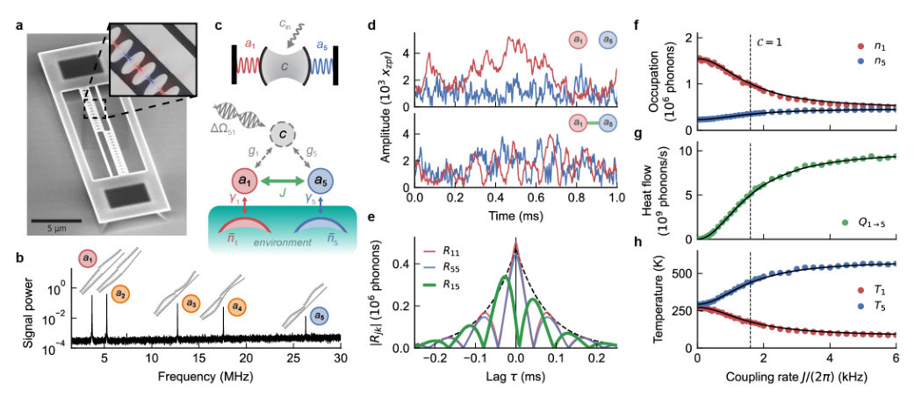
<figcaption class="paper-figure-caption"><b>Fig 1.</b> FIG. 1. Imaging heat flows in a nano-optomechanical cavity. (a) Experimental setup consisting of a sliced nanobeam nanocavity coupled to multiple mechanical modes. (b) Its thermomechanical spectrum reveals multiple optomechanically active modes (‘resonators’) that span a synthetic dimension. Flexural mode profiles of the first five modes are shown. (c) Resonators are coupled to a room-temperature bath at rates γj and can be optically coupled via time-modulated radiation pressure. This couples resonators with different frequency Ωj and corresponding bath occupancy nth j . Experiments in this figure concern a ‘hot’ resonator a1 with frequency Ω1/(2π) = 3.66 MHz, decay rate γ1/(2π) = 1.5 kHz,...</figcaption>
</figure>
<figure class="paper-figure-card">
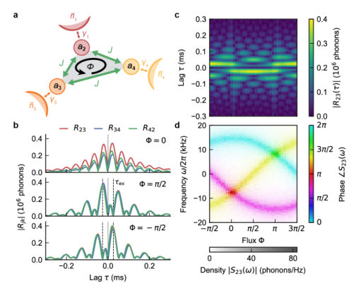
<figcaption class="paper-figure-caption"><b>Fig 2.</b> FIG. 2. Chiral thermal fluctuations in a nanomechani- cal loop. (a) Three resonators a2, a3, a4 form a loop (coupling strength J/(2π) = 7.5 kHz) threaded by a synthetic flux Φ, and interact with independent phonon baths with occupa- tions nth 2,3,4 = {0.70, 0.64, 0.32} × 106. (b) Cross-correlations Rjk(τ) measured for Φ = 0 (time-reversal symmetric) and Φ = ±π/2 (broken TRS). For Φ = ±π/2, the intermode ex- change time τex = ±2π/(3J √</figcaption>
</figure>
<figure class="paper-figure-card">
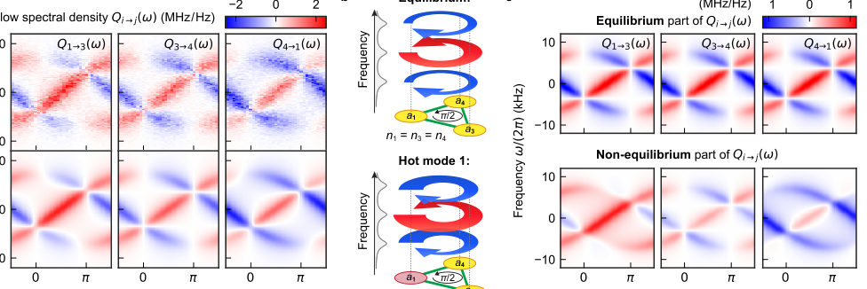
<figcaption class="paper-figure-caption"><b>Fig 3.</b> FIG. 3. Spectrally resolved chiral heat flows. (a) Flux Φ tunes the spectral densities Qi→j(ω) of the flows between resonators a1, a3, a4 (bath occupations nth 1,3,4 = {1.51, 0.45, 0.36} × 106) connected in a loop. All three coupling strengths are J/(2π) = 3.6 kHz, comparable to the optothermally matched decay rates γ3/(2π) ≈γ4/(2π) = 3.8 kHz, while γ1/(2π) = 1.5 kHz. Experiment (top) is compared to theory (bottom). (b) At TRS-breaking Φ = π/2, the three hybridized modes at different frequencies carry chiral currents with opposite handedness. In equilibrium (top), these spectrally resolved currents integrate to zero net flow. Out of equilibrium, with resonator 1 hotter than the other two,...</figcaption>
</figure>
<figure class="paper-figure-card">
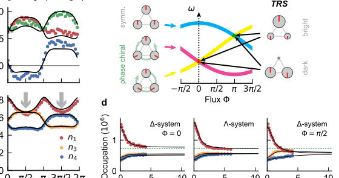
<figcaption class="paper-figure-caption"><b>Fig 4.</b> FIG. 4. Broken TRS enhances refrigeration. (a) Thermal heat flows Qj→k and (b) average resonator occupations nj as a function of flux Φ, for the network presented in Fig. 3. Black lines are calculated by integrating (20). Grey arrows indicate the fluxes for which optimal refrigeration is reached. (c) Spectral structure of a three-mode loop. Its three eigenmodes can always be written as flux-independent angular momentum states (left) that tune with Φ (colored bands, cf. Fig. 2(d)), two of which carry chiral phase advance. The chiral modes become degenerate at TRS-preserving Φ = 0, where they can be combined into bright and dark modes (right). The same holds at TRS-preserving flux Φ = π,...</figcaption>
</figure>
</div>

<p><strong>Summary.</strong> The authors experimentally demonstrate that controlling nonreciprocity in a nanomechanical resonator network using synthetic magnetism allows for the creation of chiral thermal currents. This chirality enhances refrigeration effects, enabling the system to cool below theoretical bounds applicable when time-reversal symmetry is preserved. The work provides a powerful platform for studying directed energy transport at the nanoscale.</p>
<p><strong>Why it may be interesting.</strong> This work provides an experimental realization and quantitative measure of how engineered broken symmetries (nonreciprocity) can fundamentally alter fundamental thermodynamic limits, which has implications for quantum heat engines and energy conversion.</p>
<details>
<summary>Detailed structure</summary>
<p><strong>Main problem.</strong> The study investigates how breaking time-reversal symmetry (nonreciprocity) influences microscopic thermodynamic processes like heat flow and refrigeration in nanoscale systems.</p>
<p><strong>Main result.</strong> Nonreciprocity, controlled by a synthetic magnetic flux, imprints chirality on thermal fluctuations, leading to enhanced cooling below the limits set for time-reversal symmetric networks.</p>
<p><strong>Method.</strong> The research combines experimental measurements of thermal flows with theoretical analysis using correlation functions and spectral density calculations derived from coupled oscillator dynamics.</p>
<p><strong>Model / system.</strong> The system is a nanomechanical resonator network, specifically analyzed as a loop or dimer structure. Nonreciprocity is engineered via an optically-induced synthetic magnetic flux controlling the coupling Hamiltonian.</p>
<p><strong>Key observables.</strong> Heat flow ($Q_{j	o k}$), effective temperature, chiral circulation of thermal fluctuations, and steady-state correlations $R_{jk}(	au)$.</p>
<p><strong>Important parameters / regimes.</strong> Synthetic magnetic flux ($\Phi$), bath occupation imbalance ($\Delta n_{th}$), and coupling strengths ($J$).</p>
<p><strong>Assumptions / limitations.</strong> Baths are modeled as Markovian and independent; the analysis relies on gauge-invariant fluxes around closed loops.</p>
<p><strong>Figures summary.</strong> Figures illustrate the experimental setup, time-resolved correlation functions showing thermalization, and heat flow diagrams demonstrating chiral currents in response to flux bias.</p>
<p><strong>Paper structure.</strong> The paper progresses from establishing the physical platform (nanomechanical network) to quantifying non-equilibrium energy transport using correlations. It first examines dimer dynamics, then extends to loop systems where chirality is quantified by the magnetic flux, culminating in the demonstration of enhanced refrigeration.</p>
</details>
<details>
<summary>Abstract</summary>
<p>Understanding how the breaking of reciprocity influences thermal flows and microscopic thermodynamic processes such as refrigeration and energy conversion is of broad current interest. We report experimental measurements of thermal flows and refrigeration in nanomechanical resonator networks in which nonreciprocity is controlled through an optically-induced synthetic magnetic flux. Time-modulated optomechanical interactions allow controlled coupling, gauge fields, and refrigeration processes through nanomechanical frequency conversion. We quantify nonequilibrium heat flows between resonators coupled to dissipative baths of different occupation and image heat and effective temperature in networks through measuring correlations of fluctuations. Synthetic magnetism is shown to imprint chirality on thermal fluctuations in a loop of resonators, leading to pronounced chiral flows with different handedness in distinct frequency bands. We find that the heat flows in a non-equilibrium system are tuned by the synthetic magnetic flux, which redistributes energy in the thermal steady-state. Specifically, we illustrate how nonreciprocity enhances the refrigeration of a resonator in the strong coupling regime, reducing its temperature below the bound that applies to time-reversal symmetric networks. These results experimentally demonstrate the impact of nonreciprocity on thermodynamic machines, and provide new methods to characterize them at the microscopic level.</p>
</details>
<p><sub><a href="#top">↑ back to top</a></sub></p>

<p><a id="paper-2607.23728"></a></p>
<h3 id="spatial-spread-of-infection-transitions-between-pulled-and-pushed-fronts"><a href="http://arxiv.org/abs/2607.23728v1">Spatial spread of infection: transitions between pulled and pushed fronts</a></h3>
<p><strong>Authors:</strong> Evgeniy Khain, Rohan Sukumar<br>
<strong>Type:</strong> theory · <strong>Category:</strong> statistical mechanics · <strong>PDF:</strong> <a href="https://arxiv.org/pdf/2607.23728v1">https://arxiv.org/pdf/2607.23728v1</a><br>
<strong>Analysis basis:</strong> full PDF text, analyzed in chunks
<strong>Topic relevance:</strong> <code>analog quantum simulation</code> <strong>3/5</strong> · <code>driven-dissipative phase transition</code> <strong>3/5</strong> · <code>non-equilibrium dynamics</code> <strong>3/5</strong> · <code>non-equilibrium universality</code> <strong>3/5</strong> · <code>methods for driven-dissipative</code> <strong>2/5</strong> · <code>Frenkel-Kontorova</code> <strong>1/5</strong> · <code>Keldysh / 2PI / non-Gaussian methods</code> <strong>1/5</strong> · <code>correlated / nonlocal dissipation</code> <strong>1/5</strong> · <code>entanglement &amp; information structure</code> <strong>1/5</strong></p>
<div class="figure-strip-hint">↔ Scroll figures horizontally</div>
<div class="paper-figures-scroll">
<figure class="paper-figure-card">
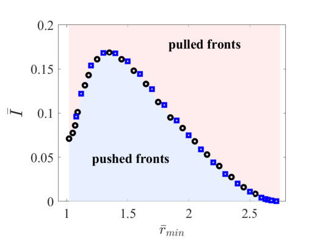
<figcaption class="paper-figure-caption"><b>Fig 1.</b> FIG. 1: Phase plane of parameters: the border between the regions of pulled and pushed fronts, ¯rmax = 2.8. Black circles are computed from the numerical solution of Eqs. (2-3). Blue squares are computed by employing the “shooting” numerical procedure, see text.</figcaption>
</figure>
<figure class="paper-figure-card">

<figcaption class="paper-figure-caption"><b>Fig 2.</b> Figure 2 shows an example of the pulled and pushed front profiles for both the fraction of infected (Fig. 2a) and the fraction of susceptible (Fig. 2b). As the tran- sition across the border between the pulled and pushed regions can be discontinuous, the pulled and pushed front profiles can be remarkably different. In the pushed case (black dash-dotted lines), the amplitude of the infection pulse is higher (and therefore the remaining fraction of susceptible is lower) and the pulse decays faster compared to the pulled case (blue solid lines).</figcaption>
</figure>
<figure class="paper-figure-card">
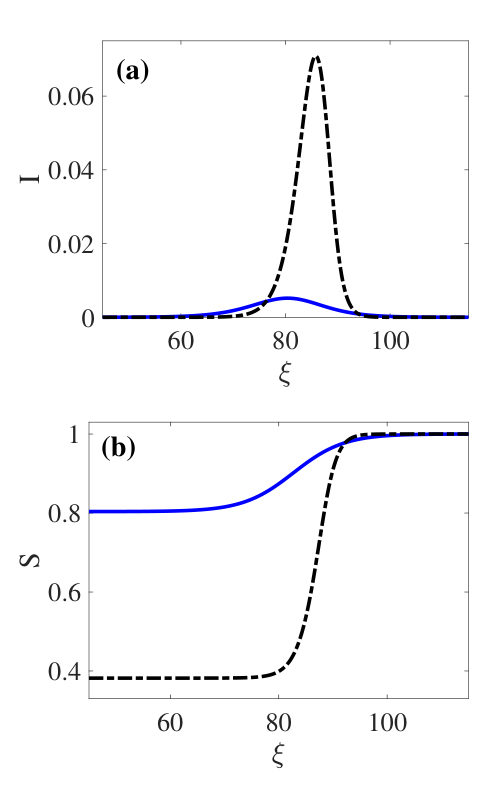
<figcaption class="paper-figure-caption"><b>Fig 3.</b> FIG. 2: The fraction of infected (a) and the fraction of suscep- tible (b): pulled and pushed front profiles. The parameters are ¯rmin = 1.06, ¯rmax = 2.8, ¯I = 0.0800 (pulled front, blue solid line) and ¯I = 0.0745 (pushed front, black dash-dotted line).</figcaption>
</figure>
<figure class="paper-figure-card">
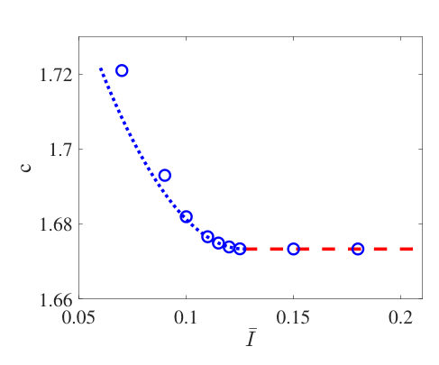
<figcaption class="paper-figure-caption"><b>Fig 4.</b> FIG. 3: Continuous transition: Front speed as a function of ¯I. The pushed front asymptotics is given by cpushed = cpulled + β(¯Ic −¯I)2, the blue dotted line, see text. The parameters are: ¯rmin = 1.7, ¯rmax = 2.8, β ≃10.714, ¯Ic ≃0.127.</figcaption>
</figure>
<figure class="paper-figure-card">
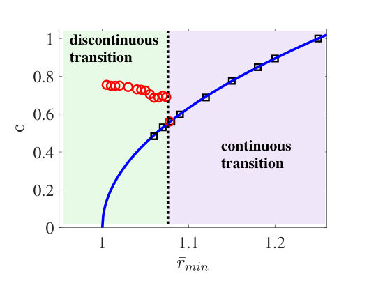
<figcaption class="paper-figure-caption"><b>Fig 5.</b> FIG. 6: The pushed and the pulled front speeds as a function of ¯rmin along the border (and from both sides of the border) of the phase diagram (Fig. 1). Red circles denote the speeds of the pushed fronts, while black squares denote the speeds of the pulled fronts as computed from the numerical solution of Eqs. (1). The theoretical pulled front speed is shown by the blue solid line. The vertical dotted line at ¯rc = 1.076 separates the regions of discontinuous (left) and continuous (right) transitions. ¯rmax = 2.8.</figcaption>
</figure>
</div>

<p><strong>Summary.</strong> This paper analyzes how an epidemic spreads spatially using a modified SIR model, focusing on the transition between 'pulled' and 'pushed' front propagation regimes. The authors use both theory and numerical simulations to map out parameter regions where these transitions occur, revealing continuous jumps, abrupt speed changes, and bistability. This work provides insights into nonlinear pattern formation dynamics applicable across various physical systems.</p>
<p><strong>Why it may be interesting.</strong> While applied to epidemiology, the mathematical framework of pattern formation, phase transitions (continuous vs. jump), and bistability in nonlinear reaction-diffusion systems is highly relevant to understanding non-equilibrium dynamics in quantum many-body systems or open quantum systems.</p>
<details>
<summary>Detailed structure</summary>
<p><strong>Main problem.</strong> The study investigates how the spatial spread of an infection (epidemic) transitions between two distinct propagation regimes: 'pulled' fronts and 'pushed' fronts.</p>
<p><strong>Main result.</strong> The system exhibits both continuous and discontinuous transitions between these front types, and a region of bistability exists where either type of pulse can be realized depending on initial conditions.</p>
<p><strong>Method.</strong> The research combines theoretical analysis of front propagation with numerical solutions of the spatial Susceptible-Infected-Recovered (SIR) partial differential equations.</p>
<p><strong>Model / system.</strong> The model is an SIR epidemiological framework where the transmission rate depends nonlinearly on the fraction of infected individuals. The dynamics are governed by coupled PDEs describing the concentration changes in S, I, and R over space and time.</p>
<p><strong>Key observables.</strong> Front speed (c), phase diagram boundaries separating pulled/pushed regimes, and the existence/size of a bistable region.</p>
<p><strong>Important parameters / regimes.</strong> The minimum transmission rate ($ar{r}_{\min}$), the parameter $ar{I}$, and critical thresholds that define transition points.</p>
<p><strong>Assumptions / limitations.</strong> The analysis assumes propagation into an unstable (healthy) state, and the model is acknowledged as a 'toy model' with unknown exact dependencies for the transmission rate.</p>
<p><strong>Figures summary.</strong> Figures illustrate the phase plane showing the border between pulled and pushed regions on $(ar{r}_{\min}, ar{I})$, and provide profiles comparing the shapes of pulled versus pushed front solutions.</p>
<p><strong>Paper structure.</strong> The paper proceeds by defining the nonlinear SIR model, performing theoretical analysis to characterize front types, numerically solving the PDEs using shooting methods, and finally mapping out the parameter space exhibiting continuous jumps, discontinuous jumps, and bistability.</p>
</details>
<details>
<summary>Abstract</summary>
<p>We consider the spatial spread of epidemic into an unstable, healthy state. When the transmission rate depends on the fraction of infected, the propagating pulse of infection can be either a pulled front or a pushed front. We determined the phase space of parameters for the pulled and pushed regions both by numerically solving the spatial SIR partial differential equations and by a theoretical analysis of the front propagation phenomenon. We found both a continuous and a discontinuous transition between the pulled and pushed front solutions; in the latter transition, the front speed undergoes a jump as a certain parameter crosses the critical threshold. The behavior of the propagating pulses near the transitions has been analyzed and a good agreement between the theory and numerics has been observed. Finally, a bistable region where both pushed and pulled propagating pulses can be realized has been discovered.</p>
</details>
<p><sub><a href="#top">↑ back to top</a></sub></p>

<p><a id="paper-2607.23816"></a></p>
<h3 id="environment-assisted-squeezing-in-a-coherently-driven-non-hermitian-degenerate-parametric-oscillator"><a href="http://arxiv.org/abs/2607.23816v1">Environment-assisted squeezing in a coherently driven non-Hermitian degenerate parametric oscillator</a></h3>
<p><strong>Authors:</strong> Muhdin Abdo Wodedo, Berihu Teklu, Konstantin G. Zloshchastiev, Jorge P. Zubelli, Tesfay Gebremariam Tesfahannes<br>
<strong>Type:</strong> theory · <strong>Category:</strong> other · <strong>PDF:</strong> <a href="https://arxiv.org/pdf/2607.23816v1">https://arxiv.org/pdf/2607.23816v1</a><br>
<strong>Analysis basis:</strong> full PDF text, analyzed in chunks
<strong>Topic relevance:</strong> <code>correlated / nonlocal dissipation</code> <strong>3/5</strong> · <code>driven-dissipative phase transition</code> <strong>3/5</strong> · <code>methods for driven-dissipative</code> <strong>3/5</strong> · <code>non-equilibrium dynamics</code> <strong>2/5</strong> · <code>non-equilibrium universality</code> <strong>2/5</strong> · <code>Keldysh / 2PI / non-Gaussian methods</code> <strong>1/5</strong> · <code>correlated cavity matter</code> <strong>1/5</strong> · <code>interference shaping light</code> <strong>1/5</strong> · <code>quantum optics experiment</code> <strong>1/5</strong></p>
<div class="figure-strip-hint">↔ Scroll figures horizontally</div>
<div class="paper-figures-scroll">
<figure class="paper-figure-card">
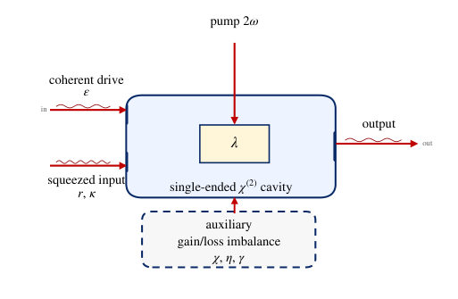
<figcaption class="paper-figure-caption"><b>Fig 1.</b> FIG. 1. Schematic of the effective setup considered in this work. The χ(2) element provides the Hermitian parametric coupling λ, the reso- nant coherent input sets the drive amplitude ε, the squeezed-reservoir port is characterized by the squeeze parameter r and decay rate κ, and a calibrated auxiliary gain/loss imbalance yields the effective non-Hermitian drift parameters χ, η, and γ.</figcaption>
</figure>
<figure class="paper-figure-card">
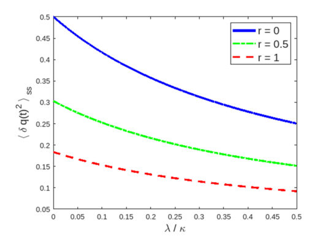
<figcaption class="paper-figure-caption"><b>Fig 2.</b> FIG. 2. Steady-state intracavity amplitude-quadrature variance δq(t)2</figcaption>
</figure>
<figure class="paper-figure-card">
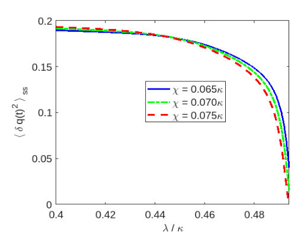
<figcaption class="paper-figure-caption"><b>Fig 3.</b> FIG. 3. Steady-state intracavity amplitude-quadrature variance δq(t)2</figcaption>
</figure>
<figure class="paper-figure-card">
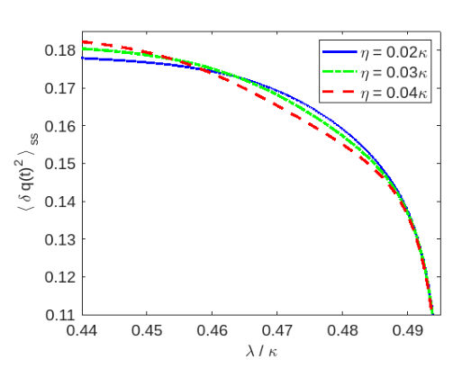
<figcaption class="paper-figure-caption"><b>Fig 4.</b> FIG. 4. Steady-state intracavity amplitude-quadrature variance δq(t)2</figcaption>
</figure>
<figure class="paper-figure-card">
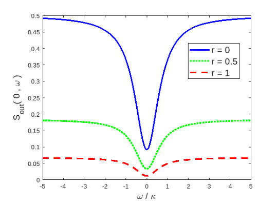
<figcaption class="paper-figure-caption"><b>Fig 5.</b> FIG. 5. Output amplitude-quadrature squeezing spectrum Sout(0, ω) as a function of ω/κ for several squeeze parameters r, with λ = 0.2κ and the non-Hermitian contributions set to zero.</figcaption>
</figure>
</div>

<p><strong>Summary.</strong> This paper theoretically analyzes quantum noise reduction in a parametric oscillator coupled to a squeezed reservoir and exhibiting gain-loss imbalance. By using input--output theory, the authors show that these environment-assisted mechanisms allow for operating regimes where squeezing surpasses fundamental limits. The results provide guidelines for designing cavity QED systems to generate highly nonclassical light.</p>
<p><strong>Why it may be interesting.</strong> This work provides concrete, experimentally testable parameter maps showing how engineered dissipation (reservoir squeezing) can synergize with cavity loss/gain imbalances to achieve nonclassical light states beyond what is possible in purely Hermitian models.</p>
<details>
<summary>Detailed structure</summary>
<p><strong>Main problem.</strong> The study investigates how environment-assisted techniques can enhance quantum squeezing in a realistic, lossy optical cavity system.</p>
<p><strong>Main result.</strong> The research demonstrates that combining reservoir engineering (squeezing) with controlled gain/loss imbalance (non-Hermitian terms) opens parameter windows for suppressing intracavity noise below the standard quantum limit.</p>
<p><strong>Method.</strong> The analysis employs input--output theory applied to a master equation formalism, deriving closed-form expressions for steady-state variances and spectra.</p>
<p><strong>Model / system.</strong> The system is a degenerate parametric oscillator (DOPO) cavity mode coupled to a broadband squeezed reservoir. The dynamics are modeled using an effective non-Hermitian Hamiltonian incorporating gain/loss imbalances ($\chi, \eta, \gamma$).</p>
<p><strong>Key observables.</strong> Steady-state quadrature variances, output squeezing spectrum, and power spectrum.</p>
<p><strong>Important parameters / regimes.</strong> Reservoir squeeze factor ($r$), coherent drive amplitude ($\epsilon$), parametric gain ($\lambda$), and non-Hermitian imbalance coefficients ($\chi, \eta, \gamma$).</p>
<p><strong>Assumptions / limitations.</strong> The analysis is restricted to the stable Gaussian regime where the drift matrix remains stable.</p>
<p><strong>Figures summary.</strong> Figures illustrate quadrature variance suppression (Figure 2), the effect of loss terms on intracavity variance (Figures 3 &amp; 4), and the output squeezing spectrum/power spectrum showing enhancement due to non-Hermitian contributions (Figures 6, 7, 8).</p>
<p><strong>Paper structure.</strong> The paper proceeds by deriving mean dynamics from a master equation, then calculating quadrature fluctuations via Langevin equations. Finally, it computes the steady-state spectra for both the output field and the power spectrum.</p>
</details>
<details>
<summary>Abstract</summary>
<p>Environment-assisted approaches to nonclassical light offer a practical path to strong squeezing in imperfect, lossy platforms. In this paper, we study a degenerate parametric oscillator in which a coherently driven cavity is coupled to a broadband squeezed reservoir via a single-port mirror. At the same time, the intracavity dynamics include non-Hermitian (gain-loss-imbalanced) terms. Within input--output theory, we obtain closed-form expressions for the steady-state quadrature variances, the output squeezing spectrum, and the power spectrum, and map their dependence on the reservoir squeeze factor, the coherent drive amplitude, and the parametric gain. We find that the non-Hermitian contributions open operating windows in which the intracavity quadrature noise is markedly suppressed below the standard quantum limit and, depending on the parameter set, either sharpen or amplify spectral squeezing and power-spectral features at the output. The non-Hermitian coefficients are treated as effective, low-order drift parameters that describe calibrated imbalance between engineered source and sink channels after auxiliary degrees of freedom have been eliminated. The analysis is restricted to the stable Gaussian regime in which the drift matrix is stable, and the squeezed-reservoir diffusion matrix remains physical. The results demonstrate an environment-assisted approach in which reservoir engineering and coherent driving work together to enhance squeezing. The resulting parameter maps identify experimentally testable windows, rather than a unique device prescription, for combining reservoir squeezing, coherent driving, and controlled gain/loss imbalance in cavity-QED and nonlinear photonic settings.</p>
</details>
<p><sub><a href="#top">↑ back to top</a></sub></p>

<p><a id="paper-2607.24328"></a></p>
<h3 id="the-role-of-nestedness-and-saturating-feedback-in-bipartite-ecological-systems"><a href="http://arxiv.org/abs/2607.24328v1">The role of nestedness and saturating feedback in bipartite ecological systems</a></h3>
<p><strong>Authors:</strong> Nirbhay Patil, Ada Altieri<br>
<strong>Type:</strong> theory · <strong>Category:</strong> disordered systems and neural networks · <strong>PDF:</strong> <a href="https://arxiv.org/pdf/2607.24328v1">https://arxiv.org/pdf/2607.24328v1</a><br>
<strong>Analysis basis:</strong> full PDF text, analyzed in chunks
<strong>Topic relevance:</strong> <code>Keldysh / 2PI / non-Gaussian methods</code> <strong>3/5</strong> · <code>driven-dissipative phase transition</code> <strong>3/5</strong> · <code>analog quantum simulation</code> <strong>2/5</strong> · <code>methods for driven-dissipative</code> <strong>2/5</strong> · <code>non-equilibrium dynamics</code> <strong>2/5</strong> · <code>non-equilibrium universality</code> <strong>2/5</strong> · <code>correlated / nonlocal dissipation</code> <strong>1/5</strong> · <code>correlated cavity matter</code> <strong>1/5</strong> · <code>entanglement &amp; information structure</code> <strong>1/5</strong></p>
<div class="figure-strip-hint">↔ Scroll figures horizontally</div>
<div class="paper-figures-scroll">
<figure class="paper-figure-card">
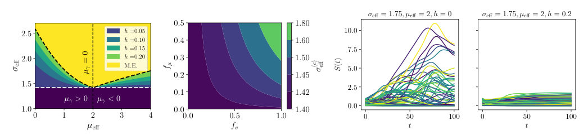
<figcaption class="paper-figure-caption"><b>Fig 1.</b> Figure 1: The phase boundary between the Unique Fixed Point and Multiple Attractor phases moves upwards as we increase h. Left plot: the axes represent the effective mean and variances µeff = µβ −µγ and σ2 eff = σ2 β + σ2 γ.</figcaption>
</figure>
<figure class="paper-figure-card">
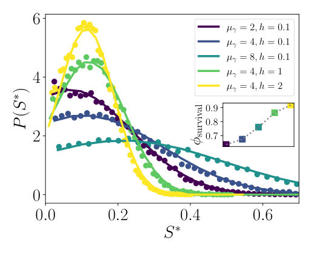
<figcaption class="paper-figure-caption"><b>Fig 2.</b> Figure 2: Theoretical predictions of the stationary species abundance distributions overlaid on simulation results represented by points, with µβ = 10, σβ = 0.5, and σγ = 1. Notice that both parameters have a pos- itive effect on the survival probability, as shown in the inset plot. Results for fully connected networks.</figcaption>
</figure>
<figure class="paper-figure-card">
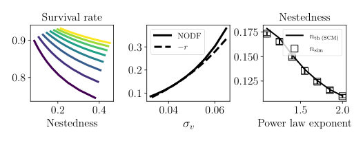
<figcaption class="paper-figure-caption"><b>Fig 3.</b> Figure 3: The survival rate of species plotted alongside the nestedness for different values of the average con- nectance varying from 0.01 (deep purple) to 0.1 (yel- low), taking µβ = 0.1, µγ = 0.15, σβ = 0.1, σγ = 0.5 and h = 0.01. For each value of the average connectiv- ity chosen, we take a power law distributed graph, and calculate its nestedness, disassortativity (negative of the assortativity r), and degree heterogeneity. We are un- able to observe any benefits provided by the nestedness of a graph, as it isn’t possible to isolate this feature from the degree heterogeneity which makes the system less stable. The right most plot shows how a more fat- tailed power law (i.e. a lower...</figcaption>
</figure>
<figure class="paper-figure-card">
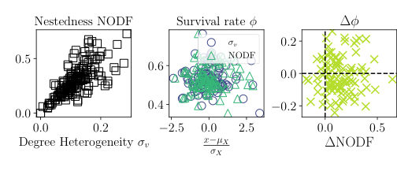
<figcaption class="paper-figure-caption"><b>Fig 4.</b> Figure 4: For real networks from the Web of Life database, we show that nestedness is strongly corre- lated with degree heterogeneity. Consistent with our theoretical predictions, species survival shows no sys- tematic dependence on either degree heterogeneity or rescaled, demeaned nestedness. Moreover, degree- preserving randomized networks can differ substantially in nestedness without exhibiting corresponding changes in survival. Among networks that are more nested than expected from their degree sequence, 56% actually dis- play lower survival than their randomized counterparts.</figcaption>
</figure>
</div>

<p><strong>Summary.</strong> This theoretical work analyzes ecological stability in bipartite networks using advanced techniques like Dynamical Mean-Field Theory. It demonstrates that introducing saturation into mutualistic interactions is crucial for preventing system collapse, and critically argues that structural features like nestedness are not intrinsically stabilizing; rather, stability emerges from the combined statistics of nonlinearity and network disorder.</p>
<p><strong>Why it may be interesting.</strong> While applied to ecology, the mathematical machinery—DMFT analysis on disordered, interacting systems with nonlinear feedback—is highly relevant to understanding non-equilibrium dynamics in complex quantum many-body systems or neural network models exhibiting glassy behavior.</p>
<details>
<summary>Detailed structure</summary>
<p><strong>Main problem.</strong> The paper investigates how complex ecological systems balance competition and cooperation, specifically addressing why standard models fail when mutualism is present.</p>
<p><strong>Main result.</strong> Nonlinear saturation in mutualistic feedbacks stabilizes the system by bounding runaway growth, while structural measures like nestedness do not provide an independent source of stability; stability depends on the joint statistics of saturation, disorder, and degree heterogeneity.</p>
<p><strong>Method.</strong> The analysis employs Dynamical Mean-Field Theory (DMFT) combined with random-matrix theory to derive effective dynamics for large bipartite ecological networks.</p>
<p><strong>Model / system.</strong> The system models bipartite ecological interactions (e.g., plant-pollinator), governed by generalized Lotka-Volterra equations extended with Monod-like saturation terms and incorporating quenched interaction disorder.</p>
<p><strong>Key observables.</strong> Stationary species abundance distributions, stability/survival rates, effective mean ($\mu_{eff}$) and variance ($\sigma^2_{eff}$), and the nestedness measure (NODF).</p>
<p><strong>Important parameters / regimes.</strong> Saturation parameter ($h$), degree heterogeneity ($\sigma_v$), interaction coefficients ($eta_{ij}, \gamma_{ij}$), and network structure.</p>
<p><strong>Assumptions / limitations.</strong> The analysis relies on DMFT approximations, assuming large-dimensional limits and sometimes employing an adiabatic approximation (separation of timescales).</p>
<p><strong>Figures summary.</strong> Figures illustrate how increasing saturation ($h$) shifts phase boundaries away from instability, and show that while real networks exhibit correlations between nestedness and degree heterogeneity, these properties do not systematically determine species survival rates.</p>
<p><strong>Paper structure.</strong> The paper progresses by first establishing the failure of linear GLV models, then introducing saturation via DMFT to stabilize the system. It subsequently analyzes structural parameters like nestedness, concluding that stability is determined by the joint statistics rather than any single architectural feature.</p>
</details>
<details>
<summary>Abstract</summary>
<p>Large ecosystems balance competition and cooperation, yet standard generalized Lotka--Volterra models make mutualism destabilizing by amplifying disorder and driving unbounded growth. We show that Monod-like saturation resolves this paradox: dynamical mean-field theory and random-matrix analysis reveal a broader stable phase and enhanced survival. Network architecture provides a second control mechanism, but nestedness offers no intrinsic stability advantage. Instead, it is a byproduct of degree distributions with high connectivity necessary for stability.</p>
</details>
<p><sub><a href="#top">↑ back to top</a></sub></p>

<p><a id="paper-2607.24171"></a></p>
<h3 id="dc-conductance-of-x-shaped-majorana-interferometer-reveals-non-abelian-anyon-statistics"><a href="http://arxiv.org/abs/2607.24171v1">DC Conductance of X-shaped Majorana Interferometer reveals Non-Abelian Anyon Statistics</a></h3>
<p><strong>Authors:</strong> Domenico Giuliano, Andrea Nava, Reinhold Egger, Fabian Hassler<br>
<strong>Type:</strong> theory · <strong>Category:</strong> other · <strong>PDF:</strong> <a href="https://arxiv.org/pdf/2607.24171v1">https://arxiv.org/pdf/2607.24171v1</a><br>
<strong>Analysis basis:</strong> full PDF text, analyzed in chunks
<strong>Topic relevance:</strong> <code>Keldysh / 2PI / non-Gaussian methods</code> <strong>3/5</strong> · <code>spintronics-quantum-optics interface</code> <strong>3/5</strong> · <code>Kondo &amp; dissipative impurity</code> <strong>2/5</strong> · <code>analog quantum simulation</code> <strong>2/5</strong> · <code>methods for driven-dissipative</code> <strong>2/5</strong> · <code>correlated / nonlocal dissipation</code> <strong>1/5</strong> · <code>correlated cavity matter</code> <strong>1/5</strong> · <code>driven-dissipative phase transition</code> <strong>1/5</strong> · <code>non-equilibrium dynamics</code> <strong>1/5</strong></p>
<div class="figure-strip-hint">↔ Scroll figures horizontally</div>
<div class="paper-figures-scroll">
<figure class="paper-figure-card">
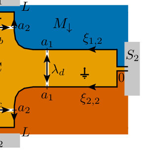
<figcaption class="paper-figure-caption"><b>Fig 1.</b> Figure 1. Schematic setup for a symmetric X-shaped chiral Majorana interferometer formed on the surface of a topological insulator. The surface is proximitized by a conventional superconductor (SC, orange) in the region defining the interferometer. The outer regions are proximitized by magnetic materials of opposite magnetization (M↑and M↓, indicated by red and blue regions, respectively). At interfaces between magnetic materials, we have 1D chiral Dirac fermion channels (short black double lines). At the SC-magnet interfaces, we have four neutral 1D chiral Majorana fermion modes ξn,j(x) of length L (black lines; arrows indicate the propagation direction), with 0 &lt; x &lt; L for each mode....</figcaption>
</figure>
<figure class="paper-figure-card">
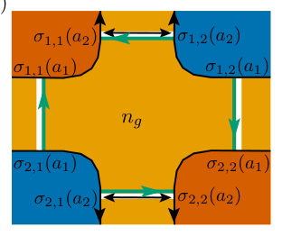
<figcaption class="paper-figure-caption"><b>Fig 2.</b> Figure 2. Schematic illustration of composite EV tunneling processes in the X-shaped Majorana interferometer, see Secs. 2.4 and 2.5 for details. We show the center part of figure 1, with the four Josephson line junctions surrounding the floating central SC island. Left panel: Clockwise (solid green arrowed lines) and counter-clockwise (dashed green arrowed lines) EV tunneling processes in the vacuum fusion channel. Right panel: Example for a composite EV tunneling process in the fermionic fusion channel. Black double-arrowed lines indicate possible pairs of Majorana fermion tunneling processes.</figcaption>
</figure>
<figure class="paper-figure-card">
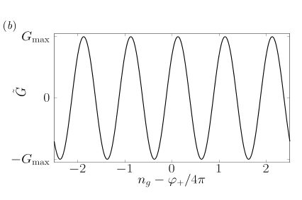
<figcaption class="paper-figure-caption"><b>Fig 3.</b> Figure 3. Linear-response DC conductance ˜G = Gmax sin(π/4−φ+/2+2πng) in Eq. (3.12), which determines the conductance tensor (3.9) in the weak-coupling regime of an X-shaped Majorana interferometer, see Eq. (2.38). (a) 2D color-scale plot for the conductance amplitude Gmax in the plane spanned by temperature T (in units of ∆) and δa = a2 −a1 (in units of lc = v/∆), see figure 1. As T decreases and δa increases, the growth of Gmax indicates a crossover toward the strong-coupling regime. (b) The conductance ˜G oscillates as a function of the effective gate charge ng −φ+/4π with an offset 1/8 due to the topological spin of Ising anyons.</figcaption>
</figure>
</div>

<p><strong>Summary.</strong> This theoretical paper proposes using an X-shaped Majorana interferometer to directly measure the non-Abelian statistics of Ising anyons via DC conductance. By analyzing the system's low-energy effective theory, the authors show that a finite conductance signal is uniquely generated when both Majorana fermion and edge-vortex tunneling channels are active. This offers a robust transport signature for topological quantum phenomena.</p>
<p><strong>Why it may be interesting.</strong> The work provides a concrete transport measurement scheme for detecting exotic topological excitations (Ising anyons), bridging abstract topological theory with measurable condensed matter observables like linear conductance.</p>
<details>
<summary>Detailed structure</summary>
<p><strong>Main problem.</strong> The primary goal is demonstrating the non-Abelian braiding statistics of Ising anyons using direct measurements of electrical DC conductance.</p>
<p><strong>Main result.</strong> A finite, measurable DC conductance in the X-shaped geometry provides direct evidence for non-Abelian statistics, which is impossible to achieve with simpler two-arm interferometers.</p>
<p><strong>Method.</strong> The analysis uses a low-energy effective theory derived via chiral bosonization to calculate the linear-response DC conductance tensor.</p>
<p><strong>Model / system.</strong> The system is a four-terminal, X-shaped chiral Majorana interferometer built on a topological insulator surface proximitized by superconductors and ferromagnets. It supports Ising anyons realized as edge vortices (EVs) interacting with Majorana fermions.</p>
<p><strong>Key observables.</strong> The DC conductance tensor ($\sigma_{DC}$ or $    ilde{G}$), which is predicted to be completely isotropic in this geometry.</p>
<p><strong>Important parameters / regimes.</strong> Gate-tunable charge parameter ($n_g$), topological spin offset, and the ratio of Josephson energy to charging energy ($E_J/E_C$).</p>
<p><strong>Assumptions / limitations.</strong> The analysis assumes no localized vortices initially and relies on linear-response theory in both weak and strong coupling limits.</p>
<p><strong>Figures summary.</strong> Figure 1 shows the schematic X-shaped interferometer setup. Figure 2 illustrates the theoretical processes, comparing vacuum vs. fermionic fusion channels for EV tunneling. Figure 3 details conductance oscillations related to topological spin.</p>
<p><strong>Paper structure.</strong> The paper develops the theory by first defining the Hamiltonian using chiral bosonization (incorporating Majorana modes, source/drain coupling, and tunneling terms). It then calculates the DC conductance in both weak-coupling (perturbative) and strong-coupling limits, culminating in the prediction of finite conductance as a signature.</p>
</details>
<details>
<summary>Abstract</summary>
<p>We propose a four-terminal, X-shaped chiral Majorana interferometer with a central floating superconducting island, enabling the direct detection of the non-Abelian statistics of Ising anyons via the linear-response DC conductance tensor in charge transport experiments. Here, Ising anyons are realizable as edge vortices nucleated at Josephson line junctions defining the superconducting island, where both edge-vortex and Majorana-fermion tunneling processes can occur. We show that in such a multi-terminal Majorana interferometer, both the vacuum and the fermionic fusion channel for Ising anyons are possible. This is in contrast to two-arm interferometers, where only the vacuum fusion channel is accessible and the DC conductance contribution from edge vortices always vanishes. Using a low-energy effective theory derived via chiral bosonization, we find that in the X-shaped interferometer, the DC conductance tensor is completely isotropic, yielding a non-zero conductance when simultaneous edge-vortex and Majorana tunneling activates the fermionic fusion channel. Apart from conductance oscillations in a gate-tunable charge parameter, which display an offset related to the anyon topological spin, measuring a finite conductance can already provide direct evidence for non-Abelian statistics in this geometry.</p>
</details>
<p><sub><a href="#top">↑ back to top</a></sub></p>

<p><a id="paper-2607.23036"></a></p>
<h3 id="parameter-calibration-for-reduced-bandwidth-two-photon-waveguide-qed-simulations"><a href="http://arxiv.org/abs/2607.23036v1">Parameter Calibration for Reduced-Bandwidth Two-Photon Waveguide-QED Simulations</a></h3>
<p><strong>Authors:</strong> Romain Piron, Akihito Soeda<br>
<strong>Type:</strong> theory · <strong>Category:</strong> other · <strong>PDF:</strong> <a href="https://arxiv.org/pdf/2607.23036v1">https://arxiv.org/pdf/2607.23036v1</a><br>
<strong>Analysis basis:</strong> full PDF text, analyzed in chunks
<strong>Topic relevance:</strong> <code>analog quantum simulation</code> <strong>3/5</strong> · <code>correlated cavity matter</code> <strong>3/5</strong> · <code>methods for driven-dissipative</code> <strong>3/5</strong> · <code>Tavis-Cummings &amp; cavity-many-emitter</code> <strong>2/5</strong> · <code>Keldysh / 2PI / non-Gaussian methods</code> <strong>1/5</strong> · <code>correlated / nonlocal dissipation</code> <strong>1/5</strong> · <code>driven-dissipative phase transition</code> <strong>1/5</strong> · <code>interference shaping light</code> <strong>1/5</strong> · <code>non-equilibrium dynamics</code> <strong>1/5</strong></p>
<div class="figure-strip-hint">↔ Scroll figures horizontally</div>
<div class="paper-figures-scroll">
<figure class="paper-figure-card">
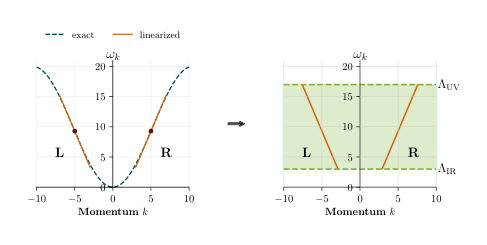
<figcaption class="paper-figure-caption"><b>Fig 1.</b> Fig. 2. Linearization and truncation of the dispersion relation around the relevant set of electromagnetic modes.</figcaption>
</figure>
<figure class="paper-figure-card">
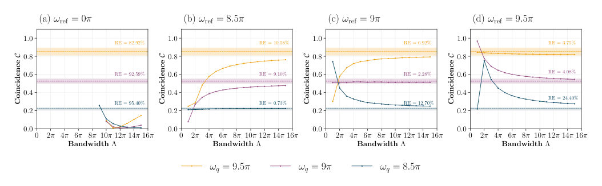
<figcaption class="paper-figure-caption"><b>Fig 2.</b> Fig. 3. Coincidence against the simulation bandwidth for different incoming photon frequencies. The frequency windows are centered at ωref = 0π (a), 8.5π (b), 9π (c), and 9.5π (d)</figcaption>
</figure>
<figure class="paper-figure-card">
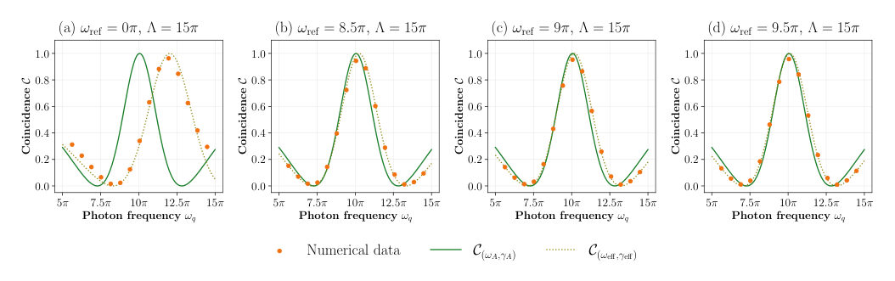
<figcaption class="paper-figure-caption"><b>Fig 3.</b> Fig. 4. Coincidence (orange points) against incoming photon frequency for windows centered at ωref = 0π (a), 8.5π (b), 9π (c), and 9.5π (d), bandwidth Λ = 15π across all cases. The expected theoretical curve is shown in green, and the effective fit with a dashed line.</figcaption>
</figure>
<figure class="paper-figure-card">
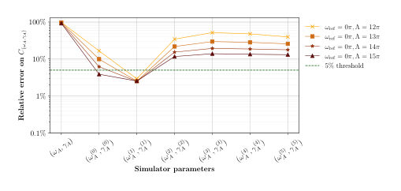
<figcaption class="paper-figure-caption"><b>Fig 4.</b> Fig. 5. Relative error on the coincidence at ωq = 9π for different parameter sets (ω0, γ0). Each curve corresponds to a different frequency window.</figcaption>
</figure>
<figure class="paper-figure-card">
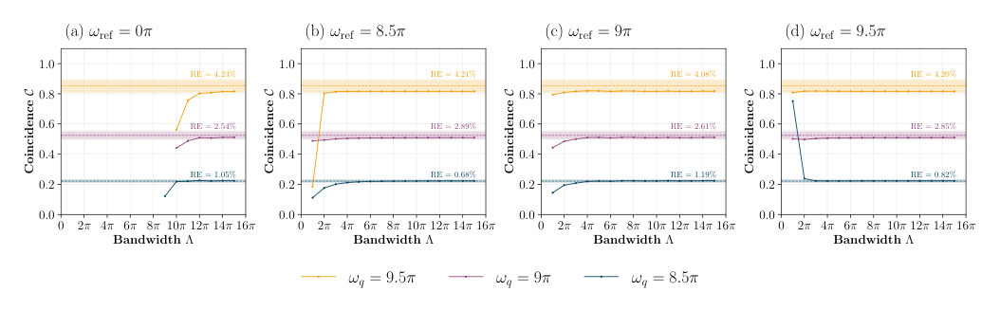
<figcaption class="paper-figure-caption"><b>Fig 5.</b> Fig. 6. Convergence of the coincidence restored after calibration, as a function of the simulation bandwidth for different incoming photon frequencies. The frequency windows are centered at ωref = 0π (a), 8.5π (b), 9π (c), and 9.5π (d)</figcaption>
</figure>
</div>

<p><strong>Summary.</strong> This paper addresses the computational bottleneck in waveguide QED simulations caused by large frequency bandwidths. The authors introduce an end-to-end framework that explicitly controls the spectral window and derives a systematic calibration procedure. This method drastically reduces simulation dimensionality while maintaining high physical accuracy, enabling deeper studies of two-photon quantum phenomena.</p>
<p><strong>Why it may be interesting.</strong> This work provides a crucial numerical tool for simulating complex quantum light-matter interactions in engineered platforms like waveguides, allowing researchers to explore physics regimes previously limited by computational resources.</p>
<details>
<summary>Detailed structure</summary>
<p><strong>Main problem.</strong> Waveguide-QED simulations are computationally prohibitive because simulating a large bandwidth requires an exponentially increasing number of frequency modes, creating a trade-off between accuracy and computational tractability.</p>
<p><strong>Main result.</strong> The authors developed a systematic calibration procedure that allows explicit control over the effective spectral bandwidth, enabling a significant reduction in the required Hilbert space dimension while preserving physical accuracy for two-photon scattering simulations.</p>
<p><strong>Method.</strong> They transitioned from time-domain simulation methods (constrained by time step $\Delta t$) to an end-to-end frequency-domain framework. This allowed them to derive and apply parameter shifts that compensate for spectral truncation effects.</p>
<p><strong>Model / system.</strong> The system is Waveguide Quantum Electrodynamics (QED), involving a two-level emitter coupled to photons confined in one-dimensional waveguides. The simulation focuses on the two-photon scattering process using an effective Hamiltonian approach.</p>
<p><strong>Key observables.</strong> Coincidence probability ($C$), relative error ($   ext{RE}$) compared to theoretical benchmarks, and the spectral profile of the coincidence probability.</p>
<p><strong>Important parameters / regimes.</strong> The central frequency ($\omega_{	ext{ref}}$) and the effective bandwidth ($\Lambda$) are key tunable parameters. The simulation is benchmarked against monochromatic limits.</p>
<p><strong>Assumptions / limitations.</strong> The analysis assumes a Markovian regime for simplicity, and the calibration procedure primarily corrects the linear component of the two-photon response, potentially neglecting higher-order multi-photon contributions.</p>
<p><strong>Figures summary.</strong> Figures illustrate the convergence of coincidence probability after applying the calibration procedure across various central frequencies ($\omega_{	ext{ref}}$) and show spectral profile comparisons with and without correction as a function of incoming photon frequency.</p>
<p><strong>Paper structure.</strong> The paper first establishes the computational bottleneck in QED simulations. It then introduces the frequency-domain framework, detailing how bandwidth truncation is implemented. The core contribution is presenting and validating the systematic calibration algorithm (Alg. 1) to restore physical accuracy across varying spectral windows.</p>
</details>
<details>
<summary>Abstract</summary>
<p>Waveguide-QED platforms represent one potential approach to scalable quantum technologies, but their simulation remains computationally demanding due to the large number of frequency modes required to describe traveling photons. In practice, increasing the simulated bandwidth rapidly raises the numerical cost, leading to a trade-off between accuracy and tractability. The existing approaches formulated in time-domain indirectly control this trade-off through the choice of time step, which obscures the connection between discretization parameters and the represented spectral window. In this work, we introduce an end-to-end framework to explicitly control the effective bandwidth in waveguide-QED simulations of two-photon scattering. We show that truncating the frequency domain requires consistent shifts of the model parameters, and derive a systematic calibration procedure that preserves the physical accuracy of the reduced model. This enables tuning the central frequency and the bandwidth of the numerical spectrum, leading to a several-fold reduction in the Hilbert space dimension while maintaining physical accuracy. We discuss the limitations of this calibration and relate the finite-bandwidth viewpoint to time-domain discretizations.</p>
</details>
<p><sub><a href="#top">↑ back to top</a></sub></p>

<p><a id="paper-2607.22916"></a></p>
<h3 id="cp2k-an-electronic-structure-and-molecular-dynamics-software-package-dynamics-transport-and-spectroscopic-response"><a href="http://arxiv.org/abs/2607.22916v1">CP2K: An electronic structure and molecular dynamics software package - Dynamics, Transport, and Spectroscopic Response</a></h3>
<p><strong>Authors:</strong> Jan Wilhelm, Anna Hehn, Hossam Elgabarty, Beliz Sertcan Gökmen, Maximilian Graml, Stepan Marek, Ritaj Tyagi, Frederick Stein, Johann V. Potoschnig, Augustin Bussy, Christian S. Ahart, Zehua Chen, Linnea Andersson, Zdenek Futera, Filip Ivanovic, Margherita Buraschi, Christoph Schran, Remi Pasquier, Leonard Prokisch, Bibek Samal, Jelena Schmitz, Shridhar Sanjay Shanbhag, Harald Forbert, Ole Schütt, Franz Pöschl, Sebastian Ehlert, Stefano Battaglia, Michele Nottoli, Benjamin Stamm, Vamsee Voora, Rustam Z. Khaliullin, Sergey K. Chulkov, Matt B. Watkins, Clotilde S. Cucinotta, Jochen Blumberger, Chao Zhang, Yang Yang, Dominik Marx, Matthias Krack, Jürg Hutter, Marcella Iannuzzi, Thomas D. Kühne<br>
<strong>Type:</strong> theory · <strong>Category:</strong> statistical mechanics · <strong>PDF:</strong> <a href="https://arxiv.org/pdf/2607.22916v1">https://arxiv.org/pdf/2607.22916v1</a><br>
<strong>Analysis basis:</strong> full PDF text, analyzed in chunks
<strong>Topic relevance:</strong> <code>Keldysh / 2PI / non-Gaussian methods</code> <strong>3/5</strong> · <code>methods for driven-dissipative</code> <strong>3/5</strong> · <code>non-equilibrium dynamics</code> <strong>3/5</strong> · <code>correlated / nonlocal dissipation</code> <strong>2/5</strong> · <code>driven-dissipative phase transition</code> <strong>2/5</strong> · <code>non-equilibrium universality</code> <strong>1/5</strong></p>
<div class="figure-strip-hint">↔ Scroll figures horizontally</div>
<div class="paper-figures-scroll">
<figure class="paper-figure-card">
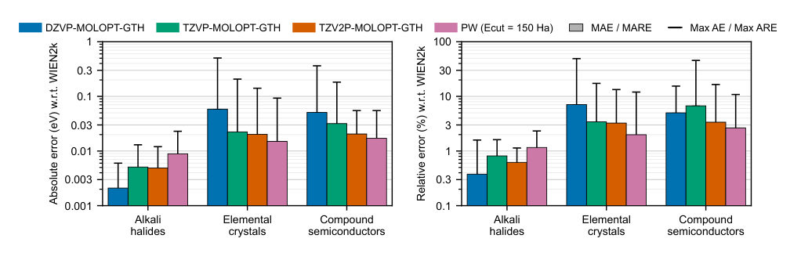
<figcaption class="paper-figure-caption"><b>Fig 1.</b> FIG. 1. Accuracy of spin–orbit-coupling splittings in the electronic band structure computed using PBE with HGH spin– orbit coupling,71,72 evaluated against all-electron reference from WIEN2k.73,74 The benchmark set contains spin splittings of various crystals: alkali halides, elements, and semiconductors.74 We employ various Gaussian basis sets with CP2K and a PW basis set with ABINIT.72,75,76 Left panel: absolute errors (eV). The bar and whisker give the mean and maximum absolute errors, respectively, over the spin splittings in each material class. Right panel: corresponding relative errors (%).</figcaption>
</figure>
<figure class="paper-figure-card">
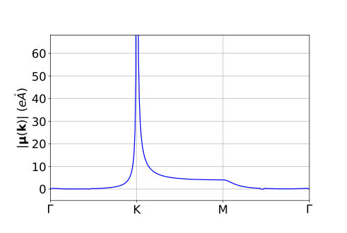
<figcaption class="paper-figure-caption"><b>Fig 2.</b> FIG. 2. Magnitude of the transition-dipole matrix element for the transition between the highest valence and lowest conduction bands in graphene as a function of k in the Brillouin zone, computed with CP2K from the off-diagonal transition-dipole expression detailed in Section IV C in the SI.</figcaption>
</figure>
<figure class="paper-figure-card">
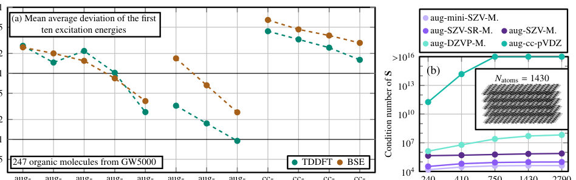
<figcaption class="paper-figure-caption"><b>Fig 3.</b> FIG. 3. Benchmarking the new augmented MOLOPT basis sets. (a) shows the basis set convergence of the first ten excitation energies from TDDFT (PBE0) and BSE calculations on top of G0W0@PBE0 over 247 molecules from the GW5000 database. We report both the mean absolute deviation for the augmented MOLOPT, aug-cc-pVXZ and cc-pVXZ basis sets, with the aug-cc-pV5Z results taken as reference. (b) shows the condition number of the overlap matrix for different basis sets in finite graphite pieces of increasing size. The inset shows the case for 1430 atoms, the number of atoms is varied by changing the horizontal size. Data from Ref. 140.</figcaption>
</figure>
<figure class="paper-figure-card">
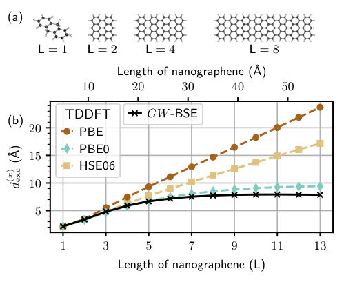
<figcaption class="paper-figure-caption"><b>Fig 4.</b> FIG. 4. Size of an excitation in quasi-one-dimensional nanographenes of different length L for different excited- state methods. (a) Geometries of quasi-one-dimensional nanographenes with increasing length L, visualized using Ref. 151. (b) Size of the excitation [d(x) exc, Eq. (40)] along the long nanographene axis for TDDFT (in color, employ- ing the PBE,152 PBE0,153 and HSE06,154,155 XC function- als) and GW plus the BSE (black curve). d(x) exc is strongly dependent on the XC functional in TDDFT, where the hy- brid functional PBE0,153 agrees largely with the GW plus BSE predictions. The Tamm–Dancoff approximation is used throughout. Data are taken from Ref. 150.</figcaption>
</figure>
<figure class="paper-figure-card">
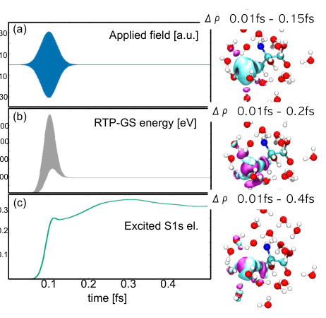
<figcaption class="paper-figure-caption"><b>Fig 5.</b> FIG. 5. RT-TDDFT simulation of the dianion of cysteine in aqueous solution (PBE0, 6-311G** basis set). (a) Ap- plied laser pulse with intensity 1014 W/cm2 and wavelength 0.5073 nm, resonant with the S K-edge. (b) Total KS en- ergy change during the pulsed excitation. (c) Projection of the time-dependent orbital coefficients onto the ground-state reference for all occupied orbitals, quantifying the degree of excitation per orbital. Right column: charge-density differ- ence maps at three time steps following the pulse onset. Pur- ple indicates charge accumulation, cyan charge depletion.</figcaption>
</figure>
</div>

<p><strong>Summary.</strong> This paper reviews the CP2K software package's advanced capabilities to bridge electronic structure theory with statistical mechanics. It details how the code calculates observables like spectra and transport coefficients by correctly accounting for finite temperature effects, such as nuclear motion and thermal averaging. This makes it a powerful tool for simulating complex chemical and condensed matter systems beyond simple ground-state calculations.</p>
<p><strong>Why it may be interesting.</strong> It provides a comprehensive computational framework for calculating time-dependent or thermally averaged properties, which is crucial for understanding open quantum systems and non-equilibrium dynamics in condensed matter.</p>
<details>
<summary>Detailed structure</summary>
<p><strong>Main problem.</strong> To move beyond static, zero-temperature calculations for predicting experimental observables by incorporating finite-temperature effects like nuclear motion and anharmonicity.</p>
<p><strong>Main result.</strong> The paper details CP2K's unique capability to unify quantum chemistry with statistical mechanics by enabling the calculation of spectra and transport properties averaged over thermal ensembles or propagated in real time.</p>
<p><strong>Method.</strong> It systematically reviews methods linking electronic structure (DFT, GW) to dynamics via techniques like time-correlation functions, path integrals, and open-boundary simulations for response calculations.</p>
<p><strong>Model / system.</strong> The package is applicable to chemical systems ranging from single molecules to condensed phases, covering diverse environments such as liquids, interfaces, and disordered solids where fluctuating potentials are key.</p>
<p><strong>Key observables.</strong> Spectroscopic signatures (IR, Raman, THz), transport coefficients (conductivity), chemical shifts (NMR), and excitation energies.</p>
<p><strong>Important parameters / regimes.</strong> Finite temperature ($T$), external electric fields ($\mathbf{E}$ or $\mathbf{D}$), and quantum nuclear effects (CNEO).</p>
<p><strong>Assumptions / limitations.</strong> The primary limitation addressed is the necessity to sample the underlying free energy landscape at finite temperature rather than relying solely on static potential energy surfaces.</p>
<p><strong>Figures summary.</strong> Table I maps out CP2K's comprehensive spectroscopic and response capabilities across various probes; Table II specifies when static calculations must be embedded in finite-temperature sampling techniques.</p>
<p><strong>Paper structure.</strong> The structure is a systematic review, first establishing the need to incorporate dynamics/temperature, then detailing the integration of electronic structure methods with MD/response theories, and finally covering advanced topics like field coupling and quantum nuclear effects.</p>
</details>
<details>
<summary>Abstract</summary>
<p>One of the distinguishing aspects of CP2K is its seamless integration of diverse structural and transition-state optimization techniques with advanced sampling approaches including Monte Carlo, molecular dynamics, and metadynamics, enabling the efficient exploration of complex potential- and free-energy landscapes, including rare events. These capabilities are combined with a broad hierarchy of energy and force evaluation methods, ranging from classical and machine-learned interaction potentials and mixed quantum-classical multiscale and semiempirical schemes, to highly accurate quantum-mechanical electronic-structure approaches. At the heart of the latter lies the Gaussian and plane-wave framework, along with its augmented all-electron generalization, which have been described in detail in our previous code review [T. D. Kühne et al., J. Chem. Phys. 152, 194103 (2020)]. Building on this foundation, the present work revisits the methods within CP2K that turn electronic structure into dynamics, transport, and spectroscopic response. Particular emphasis is placed on the coupling between static response calculations and nuclear motion: spectra may be evaluated at optimized structures, averaged over thermally sampled configurations, obtained from time-correlation functions along ab-initio or path integral molecular trajectories, or followed in real time together with electronic and nuclear dynamics. The same modular structure also enables equilibrium and biased transport simulations, from Kubo-type linear response to open-boundary approaches under external potentials, highlighting CP2K's unique capability to unify quantum chemistry with quantum and statistical mechanics within a versatile, holistic simulation environment.</p>
</details>
<p><sub><a href="#top">↑ back to top</a></sub></p>

<p><a id="paper-2607.24163"></a></p>
<h3 id="dynamic-hysteresis-in-an-autocatalytic-reaction-network"><a href="http://arxiv.org/abs/2607.24163v1">Dynamic hysteresis in an autocatalytic reaction network</a></h3>
<p><strong>Authors:</strong> Sheela Yadav, Jason R. Green, Moupriya Das<br>
<strong>Type:</strong> theory · <strong>Category:</strong> statistical mechanics · <strong>PDF:</strong> <a href="https://arxiv.org/pdf/2607.24163v1">https://arxiv.org/pdf/2607.24163v1</a><br>
<strong>Analysis basis:</strong> full PDF text, analyzed in chunks
<strong>Topic relevance:</strong> <code>driven-dissipative phase transition</code> <strong>3/5</strong> · <code>methods for driven-dissipative</code> <strong>3/5</strong> · <code>entanglement &amp; information structure</code> <strong>2/5</strong> · <code>non-equilibrium universality</code> <strong>2/5</strong> · <code>Keldysh / 2PI / non-Gaussian methods</code> <strong>1/5</strong> · <code>correlated / nonlocal dissipation</code> <strong>1/5</strong> · <code>non-equilibrium dynamics</code> <strong>1/5</strong></p>
<div class="figure-strip-hint">↔ Scroll figures horizontally</div>
<div class="paper-figures-scroll">
<figure class="paper-figure-card">
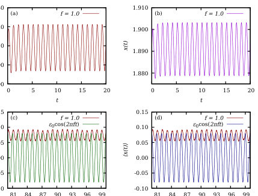
<figcaption class="paper-figure-caption"><b>Fig 1.</b> FIG. 2. (a-b) Temporal evolution of x(t) initially positioned at the left and right well minima, respectively, under the deterministic drift force in the absence of noise. (c) The time series of ensemble- averaged response ⟨x(t)⟩(red line) of the stochastic system subject to drift, fluctuations, and periodic drive, along with the comparison with the periodic drive (green smooth line) at frequency f = 1, with the initial condition at the left well minimum. (d) Same as (c) but with the initial condition in the right well; the periodic forcing is shown as the blue smooth curve.</figcaption>
</figure>
<figure class="paper-figure-card">
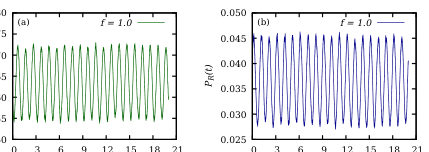
<figcaption class="paper-figure-caption"><b>Fig 2.</b> FIG. 3. (a-b) Temporal variation of the occupation probabilities for the left (PL(t)) and right (PR(t)) wells at frequency f = 1.</figcaption>
</figure>
<figure class="paper-figure-card">
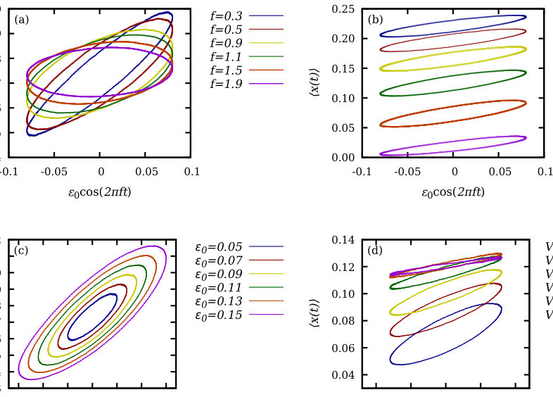
<figcaption class="paper-figure-caption"><b>Fig 3.</b> FIG. 4. Dynamic hysteresis in the ensemble-averaged autocatalyst concentration. (a) Hysteresis loops of ⟨x(t)⟩versus the periodic drive ε0 cos(2π ft) for different driving frequencies f. (b) Hysteresis loops for different well widths w at fixed f = 0.5. (c) Hysteresis loops for different driving amplitudes ε0 at fixed f = 0.5. (d) Hysteresis loops for different system sizes V at fixed f = 0.5.</figcaption>
</figure>
<figure class="paper-figure-card">
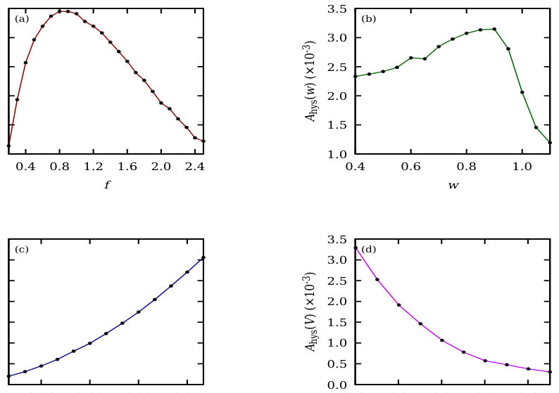
<figcaption class="paper-figure-caption"><b>Fig 4.</b> FIG. 5. Parameter dependence of the dynamic hysteresis loop area. (a) Loop area Ahys(f) as a function of driving frequency showing a maximum near f = 0.8–0.9. (b) Loop area Ahys(w) as a function of well width showing a maximum near w = 0.9. (c) Loop area Ahys(ε0) as a function of driving amplitude showing a monotonic increase. (d) Loop area Ahys(V) as a function of system size at fixed f = 0.5 showing a monotonic decrease.</figcaption>
</figure>
<figure class="paper-figure-card">
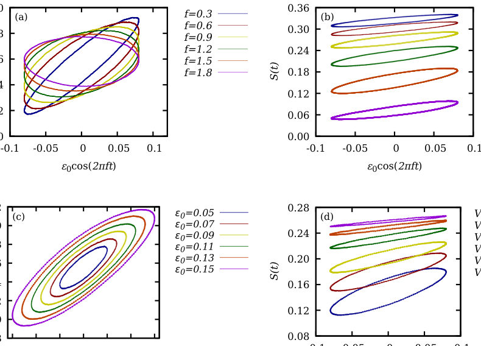
<figcaption class="paper-figure-caption"><b>Fig 5.</b> FIG. 6. Hysteresis loops representing the uncertainty in the concentration of the autocatalytic species X, quantified via information entropy S(t) as a function of external periodic force ε0 cos(2π ft). (a) Loops for different frequencies f of driving periodic force. (b) loops at a fixed driving frequency f = 0.5, showing the effect of varying the potential well width w. (c) Loops for varying the amplitude of the periodic force ε0 at fixed frequency f = 0.5. (d) Loops showing the response of the system under the effect of varying system size V at fixed frequency f = 0.5</figcaption>
</figure>
</div>

<p><strong>Summary.</strong> This paper analyzes how an autocatalytic reaction network exhibits dynamic hysteresis when subjected to periodic external driving. The key finding is that the magnitude of this hysteretic response is critically controlled by the interplay between the driving frequency and intrinsic system fluctuations. This work connects chemical non-equilibrium behavior to information-theoretic measures, suggesting applications for building complex chemical logic gates.</p>
<p><strong>Why it may be interesting.</strong> This work provides a framework connecting non-equilibrium thermodynamics (entropy production) and information theory (Shannon entropy) to observable macroscopic phenomena like dynamic hysteresis in driven chemical systems, which has parallels in open quantum systems dynamics.</p>
<details>
<summary>Detailed structure</summary>
<p><strong>Main problem.</strong> The study investigates dynamic hysteresis in an autocatalytic reaction network, arising from the interplay between intrinsic relaxation times and external periodic driving.</p>
<p><strong>Main result.</strong> Dynamic hysteresis is quantified by a loop area that is primarily controlled by the driving protocol (frequency) and fluctuation strength, rather than just amplitude or system size.</p>
<p><strong>Method.</strong> The authors use numerical simulations of the chemical Langevin dynamics derived from the Chemical Master Equation to track concentration responses.</p>
<p><strong>Model / system.</strong> The model uses a periodically driven Schlögl reaction network, which is an autocatalytic system exhibiting intrinsic bistability. The dynamics are described by a Langevin equation with multiplicative noise.</p>
<p><strong>Key observables.</strong> Dynamic Hysteresis Loop Area, Shannon Entropy, and Total Entropy Production Rate (used as measures of irreversibility).</p>
<p><strong>Important parameters / regimes.</strong> Driving frequency ($f$), driving amplitude ($\epsilon_0$), intrinsic fluctuation strength (well width $w$), and system size ($V$).</p>
<p><strong>Assumptions / limitations.</strong> The analysis relies on the Fokker-Planck approximation leading to a Langevin representation for the concentration variable.</p>
<p><strong>Figures summary.</strong> Figures illustrate how the hysteresis loop area changes with driving frequency, showing an optimal intermediate regime, and how it varies monotonically with driving amplitude and system size.</p>
<p><strong>Paper structure.</strong> The paper establishes the physical model (autocatalysis + periodic drive), derives the stochastic dynamics via Langevin equations, analyzes the resulting dynamic hysteresis using various diagnostics (loop area, entropy), and concludes by interpreting the controlling factors for applications like chemical logic gates.</p>
</details>
<details>
<summary>Abstract</summary>
<p>Here we show that an autocatalytic reaction network can exhibit dynamic hysteresis as a result of the competition between its intrinsic relaxation time scale and that of the periodic drive. The autocatalytic reaction steps generate bistability in the concentration of the autocatalytic species, and periodic pumping of the product species provides the external drive. Hysteresis arises from the lag between the concentration response of the autocatalytic species and the external periodic drive. The resulting hysteresis-loop area quantifies the extent of the system's hysteretic response. Using the periodically driven Schlögl model as a representative bistable chemical system, we use this loop area to determine how the magnitude of the hysteretic response is controlled by the driving protocol, intrinsic fluctuations, and the size of the system. Varying the driving frequency and the strength of the fluctuations causes a turnover of the hysteresis loop area, whereas the area changes monotonically with driving amplitude and system size. These trends identify the driving protocol and fluctuation strength as primary controls on the magnitude of dynamic hysteresis. In contrast to stochastic resonance, which is typically associated with weak periodic forcing and noise-assisted amplification, dynamic hysteresis can characterize the reaction-system response over a wider range of external control conditions. We further show that the delayed concentration response is mirrored in Shannon entropy and in the total entropy production rate, connecting dynamic hysteresis to information-theoretic and stochastic-thermodynamic measures of irreversibility. Overall, we identify and interpret the role of the controlling factors in chemical dynamic hysteresis and suggest implications for efficient chemical logic gates and eventually, chemical computers.</p>
</details>
<p><sub><a href="#top">↑ back to top</a></sub></p>

<p><a id="paper-2607.23324"></a></p>
<h3 id="gravitational-acceleration-encoded-in-jaynes-cummings-exchange-frequencies-quantum-fisher-information-readout-and-validity-conditions"><a href="http://arxiv.org/abs/2607.23324v1">Gravitational acceleration encoded in Jaynes Cummings exchange frequencies: Quantum Fisher information, readout, and validity conditions</a></h3>
<p><strong>Authors:</strong> Salman Sajad Wani, Mughees Ahmed Khan, Mohammad Haris Khan, Fardeen Ahmad Sofi, Abrar Ahmed Naqash, Saif Al-Kuwari<br>
<strong>Type:</strong> theory · <strong>Category:</strong> other · <strong>PDF:</strong> <a href="https://arxiv.org/pdf/2607.23324v1">https://arxiv.org/pdf/2607.23324v1</a><br>
<strong>Analysis basis:</strong> full PDF text, analyzed in chunks
<strong>Topic relevance:</strong> <code>correlated cavity matter</code> <strong>3/5</strong> · <code>analog quantum simulation</code> <strong>2/5</strong> · <code>entanglement &amp; information structure</code> <strong>2/5</strong> · <code>quantum measurements</code> <strong>2/5</strong> · <code>Keldysh / 2PI / non-Gaussian methods</code> <strong>1/5</strong> · <code>Tavis-Cummings &amp; cavity-many-emitter</code> <strong>1/5</strong> · <code>driven-dissipative phase transition</code> <strong>1/5</strong> · <code>methods for driven-dissipative</code> <strong>1/5</strong></p>
<div class="figure-strip-hint">↔ Scroll figures horizontally</div>
<div class="paper-figures-scroll">
<figure class="paper-figure-card">
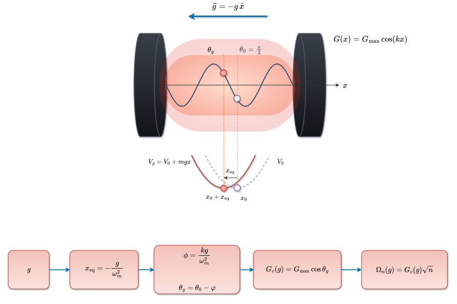
<figcaption class="paper-figure-caption"><b>Fig 1.</b> Figure 1. Gravity-to-carrier-frequency transduction. A gravitational acceleration component along the cavity axis appears as a static force on the bound center-of-mass oscillator and shifts its equilibrium from x0 to x0 + xeq, with xeq = −g/ω2 m. The equilibrium shift changes the standing-wave phase sampled by the atom to θg = θ0 −ϕ, where ϕ = kg/ω2 m. Retaining the leading Lamb Dicke carrier gives Gc(g) = Gmax cos θg, and the Jaynes Cummings ladder converts this coupling into the exchange frequencies Ωn(g) = Gc(g)√n. Filled points mark positions on the cavity axis, while open circles mark the corresponding values of the standing-wave coupling profile. The displacement is schematic and not...</figcaption>
</figure>
<figure class="paper-figure-card">
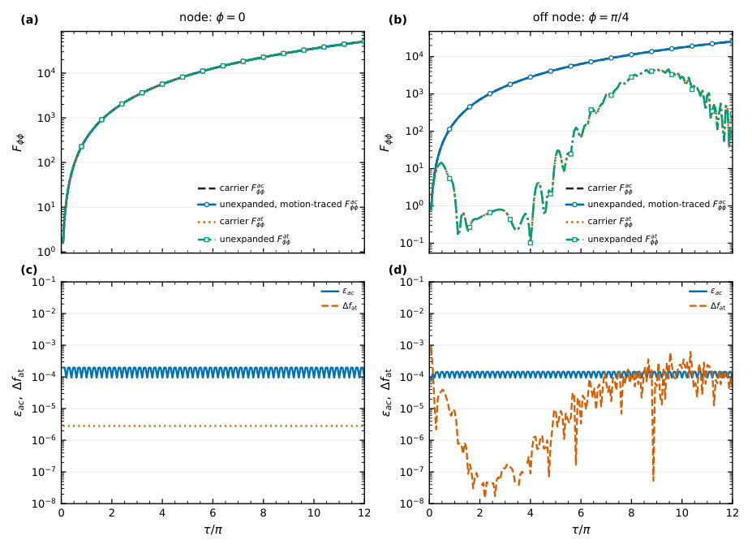
<figcaption class="paper-figure-caption"><b>Fig 2.</b> Figure 2. Validation of the carrier-only reduction. Panels (a) and (c) show the node operating point, ϕ = 0, whereas panels (b) and (d) show the off-node point ϕ = π/4. The upper panels compare the atom–cavity and atom-only QFIs of the effective carrier model with those obtained from the unexpanded displaced-frame Hamiltonian in Eq. (21). For the unexpanded model, the motional mode is traced out before evaluating the atom–cavity QFI, as defined in Eq. (23). The lower panels show εac and ∆fat from Eqs. (24) and (25). For the benchmark specified above, the maximum relative atom–cavity-QFI discrepancies over the sampled nonzero times 0 &lt; τ ≤12π are 1.96 × 10−4 at the node and 1.45 × 10−4</figcaption>
</figure>
<figure class="paper-figure-card">
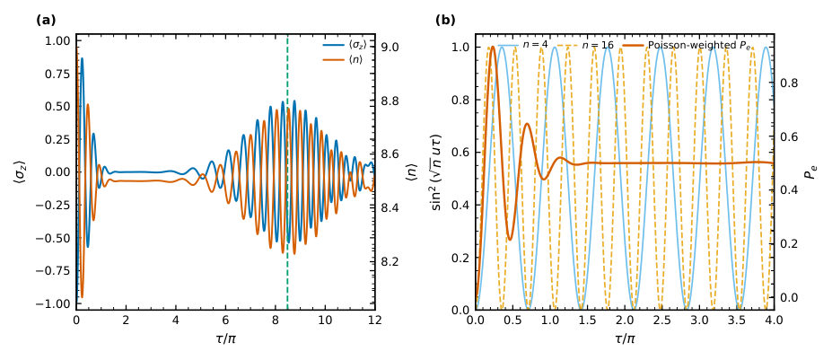
<figcaption class="paper-figure-caption"><b>Fig 3.</b> Figure 3. Closed coherent oscillations at θ0 = π/2, ϕ = π/4, and ¯n = 9. (a) Atomic inversion ⟨σz⟩ and mean photon number ⟨n⟩exchange energy coherently. The √n frequency spread causes collapse and revival near τrev ≈2π √</figcaption>
</figure>
<figure class="paper-figure-card">
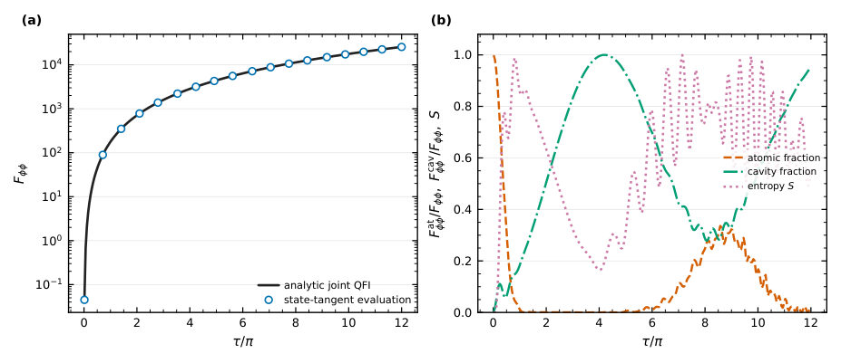
<figcaption class="paper-figure-caption"><b>Fig 4.</b> Figure 4. QFI versus time. (a) The joint atom-cavity QFI follows the exact parabola Fϕϕ = 4¯nτ 2 sin2(θ0 −ϕ); a numerical state-tangent evaluation reproduces the closed form. (b) Local atom- only and cavity-only QFI fractions, F at ϕϕ/Fϕϕ and F cav ϕϕ /Fϕϕ, together with entanglement entropy S. The gravitational information is redistributed between local subsystems while remaining bounded by the joint atom-cavity QFI. The working point is θ0 = π/2, ϕ = π/4, and ¯n = 9.</figcaption>
</figure>
<figure class="paper-figure-card">
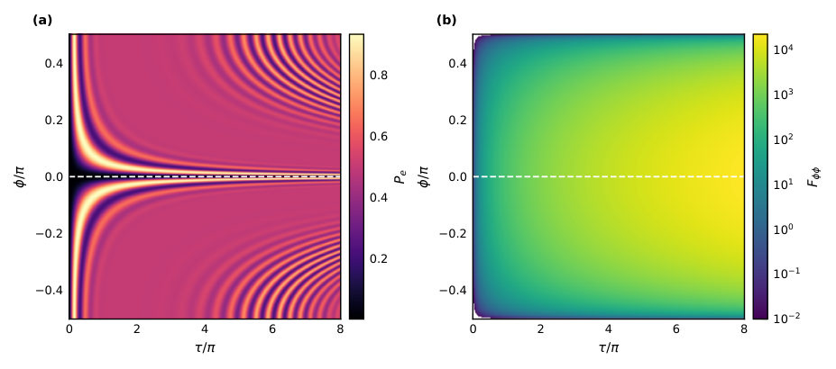
<figcaption class="paper-figure-caption"><b>Fig 5.</b> Figure 5. Signal and joint atom-cavity sensitivity maps. (a) Atomic excited-state population Pe(τ, ϕ) computed from the exact JC state for θ0 = π/2 and ¯n = 9. The node ϕ = 0 is dark in population because the carrier coupling vanishes there, whereas away from the node the fringes accelerate as Ωn = Gmax cos(θ0 −ϕ)√n. (b) Joint displaced-frame atom-cavity QFI Fϕϕ = 4¯nτ 2 sin2(θ0 −ϕ), shown on a logarithmic color scale for the same parameters. The QFI is maximal on the node ridge because it is proportional to the square of the standing-wave slope, even though the population signal in panel (a) vanishes at that point. Values below Fϕϕ = 10−2 are masked on the logarithmic display.</figcaption>
</figure>
</div>

<p><strong>Summary.</strong> The paper develops a model to measure gravitational acceleration using an atom coupled to an optical cavity. It shows that gravity shifts the system's coupling frequencies, allowing for the calculation of a joint Quantum Fisher Information (QFI). This demonstrates a robust quantum sensing protocol applicable to trapped-atom gravimeters.</p>
<p><strong>Why it may be interesting.</strong> This work provides a detailed theoretical framework for next-generation quantum sensors by showing how fundamental forces like gravity can be mapped onto measurable quantum correlations (QFI) in cavity QED systems.</p>
<details>
<summary>Detailed structure</summary>
<p><strong>Main problem.</strong> The paper focuses on encoding gravitational acceleration ($g$) into measurable quantum parameters, specifically the Jaynes-Cummings exchange frequencies ($\Omega_n(g)$), using a trapped atom coupled to an optical cavity mode.</p>
<p><strong>Main result.</strong> The joint Quantum Fisher Information (QFI) is derived and shown to be proportional to the square of the local coupling slope, demonstrating that gravity's influence can be read out through this quantum metric. The carrier approximation successfully reproduces results from the unexpanded model under appropriate conditions.</p>
<p><strong>Method.</strong> The analysis involves deriving an effective Hamiltonian by applying the Optical Rotating-Wave Approximation (RWA) and performing a displacement transformation to account for gravity, followed by calculating the QFI for both closed and open systems using Lindblad dynamics.</p>
<p><strong>Model / system.</strong> The system is a trapped atom coupled to a single cavity mode and subject to quantized center-of-mass motion along the cavity axis. The Hamiltonian incorporates terms for cavity, atomic, mechanical oscillation, dipole interaction, and gravity ($mg\hat{x}$).</p>
<p><strong>Key observables.</strong> Joint atom–cavity Quantum Fisher Information (QFI), local coupling slope, sign-sensitive estimates of axial acceleration via Ramsey detection.</p>
<p><strong>Important parameters / regimes.</strong> Gravitational acceleration ($g$), Lamb-Dicke parameter ($\epsilon_{	ext{LD}}$), interrogation time ($ au$), mean photon number ($ar{n}$).</p>
<p><strong>Assumptions / limitations.</strong> The analysis relies on the carrier approximation, which requires both small Lamb-Dicke support and suppression of first and second-order sidebands. Open-system dynamics are treated using Lindblad master equations.</p>
<p><strong>Figures summary.</strong> Figures illustrate the transduction chain from $g$ to $\Omega_n(g)$ and compare QFI results between different theoretical models (e.g., carrier vs. unexpanded).</p>
<p><strong>Paper structure.</strong> The paper systematically derives the full lab-frame Hamiltonian, applies approximations (RWA, Lamb-Dicke expansion) to derive an effective carrier model, calculates the joint QFI for this model, and finally analyzes readout strategies under open-system dynamics.</p>
</details>
<details>
<summary>Abstract</summary>
<p>We derive an effective trapped atom--cavity model in which a constant gravitational acceleration shifts the oscillator equilibrium and changes the local standing-wave coupling, thereby encoding the acceleration in the Jaynes Cummings exchange frequencies. With the atom and motion initially in their ground states and the cavity field initially coherent, we solve the closed-system carrier dynamics exactly and derive the displaced-frame quantum Fisher information (QFI) of the joint atom-cavity state. This QFI is proportional to the square of the local coupling slope, grows quadratically with interrogation time, and scales linearly with mean photon number. At the node, phase-referenced Ramsey detection gives a sign-sensitive estimate of axial acceleration and locally saturates the joint QFI. Away from the node, photon counting and phase-optimized homodyne detection provide cavity readouts when the cavity state carries more QFI than the atomic state. At the off-node operating point studied, Lindblad simulations show that cavity loss produces a finite-time QFI optimum. Lamb Dicke and sideband-suppression conditions control the carrier approximation. In the closed-system benchmark, the carrier-model QFI agrees with the atom-cavity QFI obtained from the unexpanded model after tracing out motion.</p>
</details>
<p><sub><a href="#top">↑ back to top</a></sub></p>

<p><a id="paper-2607.23603"></a></p>
<h3 id="local-micromechanics-in-a-mean-field-model-of-glasses-reveal-key-properties-of-its-non-equilibrium-rsb-phase"><a href="http://arxiv.org/abs/2607.23603v1">Local micromechanics in a mean-field model of glasses reveal key properties of its non-equilibrium RSB phase</a></h3>
<p><strong>Authors:</strong> Makoto Suda, Edan Lerner, Eran Bouchbinder<br>
<strong>Type:</strong> theory · <strong>Category:</strong> disordered systems and neural networks · <strong>PDF:</strong> <a href="https://arxiv.org/pdf/2607.23603v1">https://arxiv.org/pdf/2607.23603v1</a><br>
<strong>Analysis basis:</strong> full PDF text, analyzed in chunks
<strong>Topic relevance:</strong> <code>non-equilibrium dynamics</code> <strong>3/5</strong> · <code>non-equilibrium universality</code> <strong>2/5</strong> · <code>Keldysh / 2PI / non-Gaussian methods</code> <strong>1/5</strong> · <code>analog quantum simulation</code> <strong>1/5</strong> · <code>correlated / nonlocal dissipation</code> <strong>1/5</strong> · <code>driven-dissipative phase transition</code> <strong>1/5</strong> · <code>entanglement &amp; information structure</code> <strong>1/5</strong> · <code>exotic spin models in light-matter</code> <strong>1/5</strong> · <code>methods for driven-dissipative</code> <strong>1/5</strong> · <code>scars &amp; prethermalization</code> <strong>1/5</strong></p>
<div class="figure-strip-hint">↔ Scroll figures horizontally</div>
<div class="paper-figures-scroll">
<figure class="paper-figure-card">
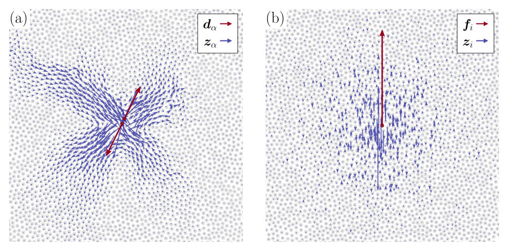
<figcaption class="paper-figure-caption"><b>Fig 1.</b> FIG. 1. (a) The displacement response zα (blue arrows) to a local force dipole dα (red arrows) in a 2D computer glass with spatially-decaying, finite-range interactions [53], see text. The response is localized near the force dipole. (b) A 2D representation of the displacement response zi (blue arrows) to a local force monopole fi (red arrow) in the mean-field model, where the ith oscillator is placed at the center and the response arrows are oriented relative to the imposed force. While the mean-field model features no spatial structure, and specifically it is characterized by statistically uniform all-to-all interactions, by arranging the the remaining oscillators such that those with...</figcaption>
</figure>
<figure class="paper-figure-card">
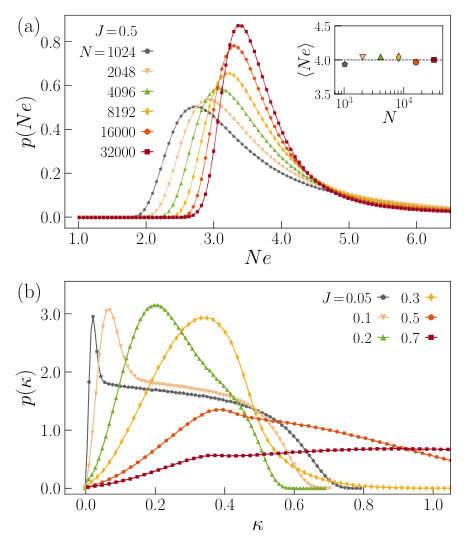
<figcaption class="paper-figure-caption"><b>Fig 2.</b> FIG. 2. (a) The distribution p(Ne) of the participation num- ber Ne of the monopole response z for J = 0.5 and various system sizes N (see legend). (inset) The mean participation number ⟨Ne⟩vs. N. The superimposed horizontal dashed line indicates an N-independent value, herein ⟨Ne⟩= 4. (b) The distribution p(κ) of monopole stiffnesses for N = 8192 and various J values (see legend). See text for definitions and discussion.</figcaption>
</figure>
<figure class="paper-figure-card">
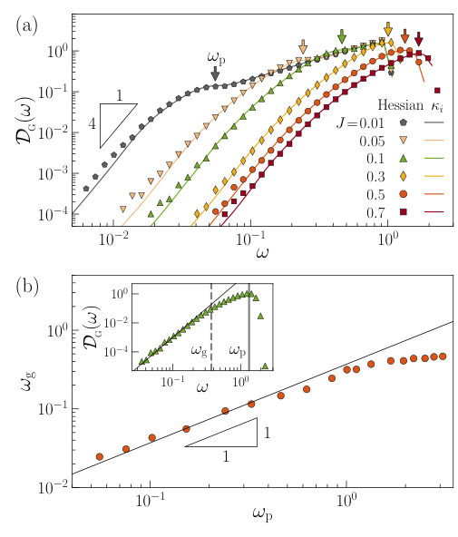
<figcaption class="paper-figure-caption"><b>Fig 3.</b> FIG. 3. (a) The nonphononic VDoS DG(ω), obtained both from diagonalizing the Hessian (marked in legend as “Hes- sian”; filled symbols) and based on the reconstruction from monopole stiffness statistics (marked in legend as “κi”; solid lines), see text, for various J (see legend). The local max- imum of DG(ω), termed the intrinsic boson-peak frequency, is marked on each curve (see downward-pointing arrows) and denoted as ωp. (b) ωp(J) vs. the upper-cutoff frequency ωg(J) of the ∼ω4 low-frequency tail, plotted for 0.01 ≤J ≤2 (from bottom-left to top-right). The superimposed solid line indi- cates ωp ∼ωg. (inset) Demonstrating the extraction of ωg, here for J = 0.5. The solid line is a fit to...</figcaption>
</figure>
<figure class="paper-figure-card">
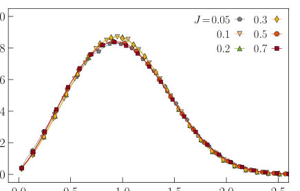
<figcaption class="paper-figure-caption"><b>Fig 4.</b> FIG. 4. The collapsed distributions p(κ/⟨κ⟩st|k &lt; J2χ) of stabilized-sector monopole stiffness for various J values and N =8192 (see legend), where ⟨κ⟩st(J) is the mean stabilized- sector stiffness. See text for definitions and discussion.</figcaption>
</figure>
<figure class="paper-figure-card">
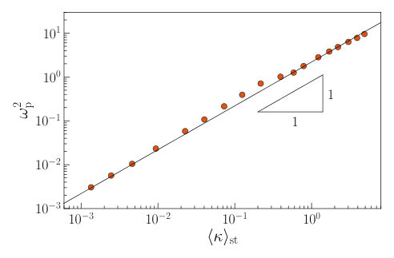
<figcaption class="paper-figure-caption"><b>Fig 5.</b> FIG. 5. The characteristic stiffness scale ω2 p(J) of the non- phononic modes vs. ⟨κ⟩st(J) for N = 8192 and 0.01 ≤J ≤2 (from bottom-left to top-right). The superimposed solid line corresponds to ⟨κ⟩st(J)∼ω2 p(J).</figcaption>
</figure>
</div>

<p><strong>Summary.</strong> This paper investigates a mean-field model for glasses by introducing a local micromechanical response function related to force monopoles. By establishing exact theoretical links between this local stiffness and global susceptibilities, the authors bridge the gap between abstract mean-field theory and measurable properties of real amorphous solids. The work predicts that key spectral features characteristic of glassy states persist even under non-equilibrium conditions.</p>
<p><strong>Why it may be interesting.</strong> While focused on classical disordered systems, the mathematical techniques involving Hessian analysis, localization properties (Participation Ratio), and non-equilibrium dynamics are highly relevant to understanding complex energy landscapes in quantum many-body systems.</p>
<details>
<summary>Detailed structure</summary>
<p><strong>Main problem.</strong> To reveal key properties of the non-equilibrium Replica-Symmetry-Breaking (RSB) phase of a mean-field model for glasses by studying its local micromechanical response.</p>
<p><strong>Main result.</strong> The micromechanical observables derived from the force monopole stiffness establish a concrete bridge between the glassy mean-field model and finite-dimensional glasses, predicting specific spectral features like the $\omega^4$ tail in the vibrational spectrum.</p>
<p><strong>Method.</strong> The authors introduce and analyze a micromechanical response function—the linear response to local force monopoles—and derive exact relations linking this local stiffness to global susceptibilities using mean-field theory techniques.</p>
<p><strong>Model / system.</strong> The study uses a disordered Hamiltonian mean-field model for glasses, characterized by random couplings ($J_{ij}$) and local stiffnesses ($k_i$), analyzed under non-equilibrium quench conditions.</p>
<p><strong>Key observables.</strong> Force monopole stiffness ($\kappa_i$), Vibrational Density of States (VDoS), global susceptibilities ($\chi, \chi_{SG}$), and the Participation Ratio ($e$).</p>
<p><strong>Important parameters / regimes.</strong> The analysis focuses on the non-equilibrium RSB phase, particularly in limits where initial stiffness is gapless ($k_m=0$) and no external field ($h=0$).</p>
<p><strong>Assumptions / limitations.</strong> The derivation relies on extending equilibrium replica methods to non-equilibrium quenched dynamics, and some results assume asymptotic exactness in the $N 	o \infty$ limit.</p>
<p><strong>Figures summary.</strong> Figures compare displacement response (dipole) versus monopole response in finite dimensions vs. mean-field models, showing analogous localization patterns for participation numbers and stiffness distributions.</p>
<p><strong>Paper structure.</strong> The paper progresses by first establishing the theoretical framework using replica methods to define local micromechanical responses, deriving exact identities linking these local quantities to global susceptibilities, and finally applying this formalism to predict observable spectral features relevant to real glasses.</p>
</details>
<details>
<summary>Abstract</summary>
<p>A recently formulated mean-field model of glasses features an equilibrium, zero-temperature Replica-Symmetry-Breaking (RSB) transition in some parameter range. In this range, the model's solution in the Replica-Symmetric phase is expressed in terms of an effective, self-consistent random potential for uncoupled degree of freedoms, where the transition to the RSB phase is characterized by the emergence of spectral-edge localized modes and a pseudogapped quartic vibrational spectrum, resulting in a finite spin-glass susceptibility. These properties are preserved in numerical solutions of the model under non-equilibrium conditions, i.e., upon an instantaneous quench. Inspired by recent advances in computer glasses, we define a micromechanical response function --- the linear response to local force monopoles --- in the framework of the mean-field model. We establish exact relations between the force monopole stiffness and global susceptibilities, which suggest a close correspondence between the non-equilibrium RSB phase of the model and the above-mentioned effective random potential description. As such, the obtained micromechanical observables constitute a concrete realization of the collective degrees of freedom of the model, offering a bridge between a glassy mean-field model and finite-dimensional glasses. We show that the model's vibrational spectrum can be computed solely from the monopole response statistics and, by employing a marginal stability criterion, we extract a characteristic frequency/stiffness scale of soft glassy modes, which is related to the boson peak in finite-dimensional, laboratory glasses.</p>
</details>
<p><sub><a href="#top">↑ back to top</a></sub></p>

<p><a id="paper-2607.23137"></a></p>
<h3 id="reasoning-about-continuous-variable-quantum-systems"><a href="http://arxiv.org/abs/2607.23137v1">Reasoning about Continuous-Variable Quantum Systems</a></h3>
<p><strong>Authors:</strong> Tianshi Yu, Gilles Barthe, Minbo Gao, Mingsheng Ying, Li Zhou<br>
<strong>Type:</strong> theory · <strong>Category:</strong> quantum information and computing · <strong>PDF:</strong> <a href="https://arxiv.org/pdf/2607.23137v1">https://arxiv.org/pdf/2607.23137v1</a><br>
<strong>Analysis basis:</strong> full PDF text, analyzed in chunks
<strong>Topic relevance:</strong> <code>quantum measurements</code> <strong>3/5</strong> · <code>measurement-induced transitions</code> <strong>2/5</strong> · <code>Keldysh / 2PI / non-Gaussian methods</code> <strong>1/5</strong> · <code>analog quantum simulation</code> <strong>1/5</strong> · <code>correlated / nonlocal dissipation</code> <strong>1/5</strong> · <code>correlated cavity matter</code> <strong>1/5</strong> · <code>driven-dissipative phase transition</code> <strong>1/5</strong> · <code>entanglement &amp; information structure</code> <strong>1/5</strong> · <code>methods for driven-dissipative</code> <strong>1/5</strong> · <code>non-equilibrium dynamics</code> <strong>1/5</strong></p>
<div class="figure-strip-hint">↔ Scroll figures horizontally</div>
<div class="paper-figures-scroll">
<figure class="paper-figure-card">
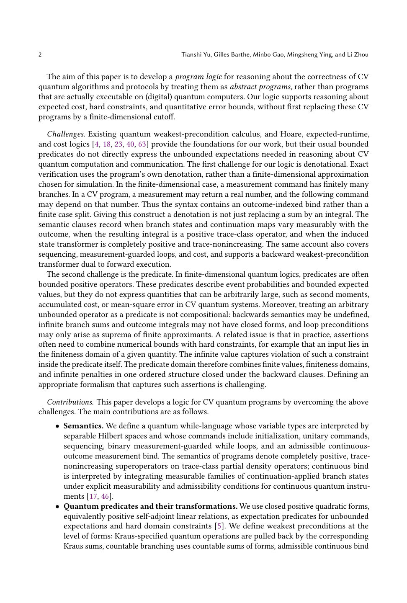
<figcaption class="paper-figure-caption"><b>Fig 1.</b> Low-resolution page preview, page 2</figcaption>
</figure>
<figure class="paper-figure-card">
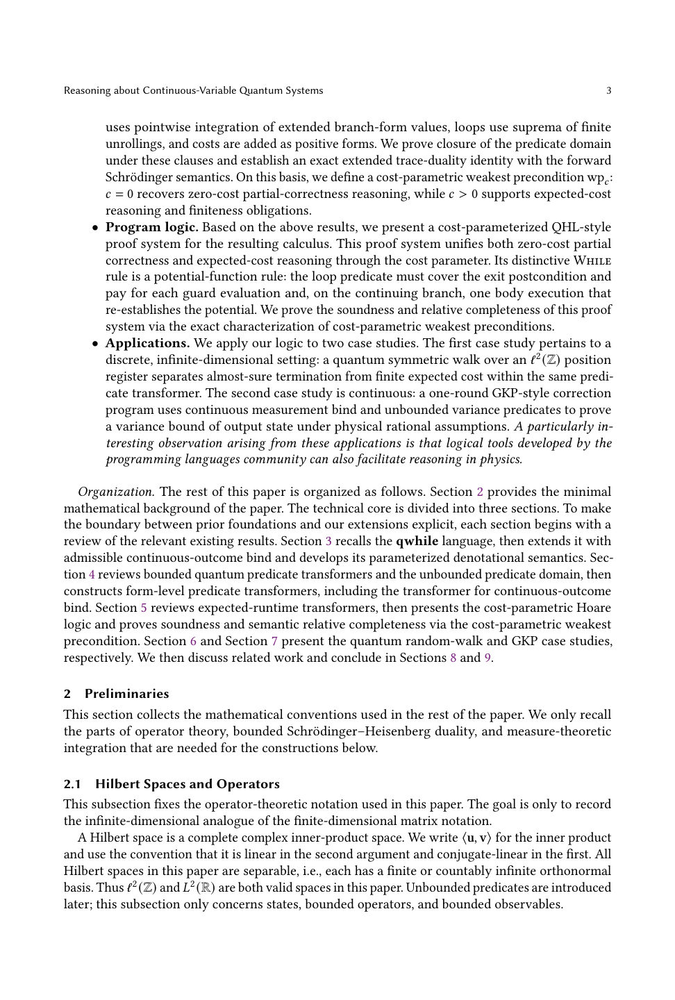
<figcaption class="paper-figure-caption"><b>Fig 2.</b> Low-resolution page preview, page 3</figcaption>
</figure>
<figure class="paper-figure-card">
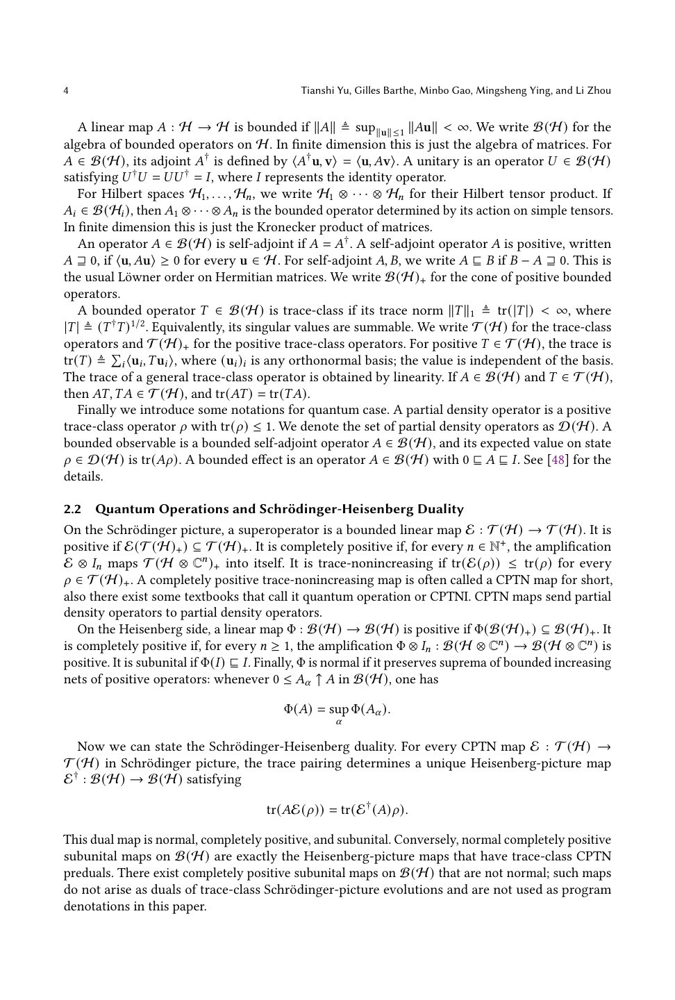
<figcaption class="paper-figure-caption"><b>Fig 3.</b> Low-resolution page preview, page 4</figcaption>
</figure>
<figure class="paper-figure-card">
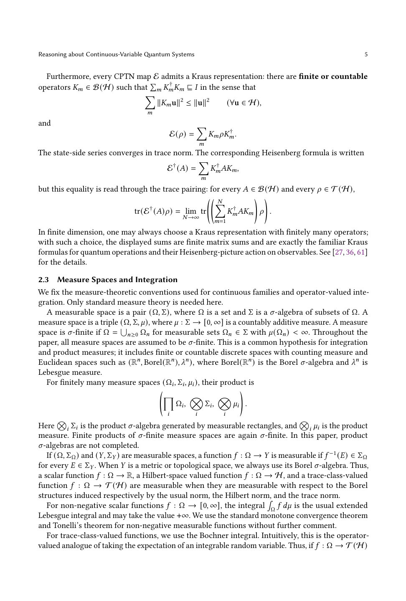
<figcaption class="paper-figure-caption"><b>Fig 4.</b> Low-resolution page preview, page 5</figcaption>
</figure>
<figure class="paper-figure-card">
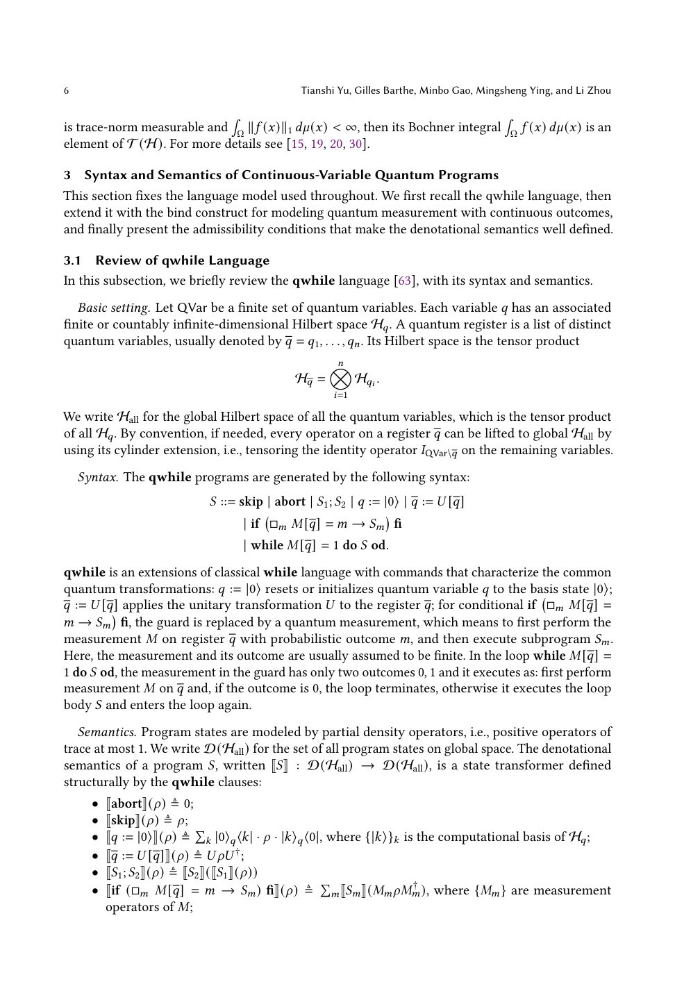
<figcaption class="paper-figure-caption"><b>Fig 5.</b> Low-resolution page preview, page 6</figcaption>
</figure>
</div>

<p><strong>Summary.</strong> This paper develops a formal semantics for Continuous-Variable Quantum Computing (CVQC) by defining a specialized logic that can handle unbounded values. It introduces closed positive quadratic forms as semantic predicates to reason about expected costs and error bounds. This framework is validated using the GKP code, providing tools for verifying quantum algorithms in continuous settings.</p>
<p><strong>Why it may be interesting.</strong> This work provides the necessary mathematical rigor to analyze complex continuous measurements and feedback loops common in quantum optics experiments, bridging theoretical computation models with physical constraints.</p>
<details>
<summary>Detailed structure</summary>
<p><strong>Main problem.</strong> The work aims to develop a formal semantics and sound verification methods for Continuous-Variable Quantum Computing (CVQC) programs.</p>
<p><strong>Main result.</strong> A formal semantics is established using closed positive quadratic forms as semantic predicates, allowing the rigorous reasoning about unbounded values inherent in continuous quantum systems.</p>
<p><strong>Method.</strong> The authors extend Hoare logic with a cost-parameterized weakest precondition ($    ext{wp}_c$) and define the predicate domain using closed positive quadratic forms to handle infinite-dimensional expectations.</p>
<p><strong>Model / system.</strong> The focus is on CVQC paradigms, particularly those based on quantum optics, and includes validation via the Gottesman–Kitaev–Preskill (GKP) error-correcting code protocol.</p>
<p><strong>Key observables.</strong> Expected cost, hard constraints, error bounds (e.g., second moment bound for GKP), and position variance ($\hat{q}^2$).</p>
<p><strong>Important parameters / regimes.</strong> The structure of the semantic predicates must accommodate unbounded values arising from continuous measurements.</p>
<p><strong>Assumptions / limitations.</strong> Existing weakest-precondition calculus often uses bounded predicates, which is insufficient for the unbounded expectations required in CVQC.</p>
<p><strong>Paper structure.</strong> The paper develops a formal semantics for a quantum while-language over separable Hilbert spaces, defines the predicate domain using closed positive quadratic forms, and validates this with case studies including GKP error correction.</p>
</details>
<details>
<summary>Abstract</summary>
<p>Continuous-variable quantum computing (CVQC) is a computing paradigm in which measurements yield values over a continuous domain. CVQC is both a convenient omputational framework for modeling physical quantum systems, and a good abstraction for hardware platforms based on quantum optics. Yet, the semantic foundations of CVQC remain underdeveloped. To address this gap, we develop a formal semantics for a core CV quantum programming language, and sound verification methods for program correctness.   A main contribution of this work is to isolate a well-behaved quantitative predicate domain that achieves sufficient expressiveness to accommodate unbounded values as they arise in the infinite-dimensional, continuous setting. Specifically, we choose closed positive quadratic forms as semantic predicates, representing finite expectations, domains of finiteness, and infinite penalties in one ordered object. We validate our choice by establishing that our semantic predicates satisfy desirable closure properties including the definition of weakest preconditions.   We validate our design with two case studies, including an example based on the celebrated GKP error-correcting code, for which we establish a second moment bound.</p>
</details>
<p><sub><a href="#top">↑ back to top</a></sub></p>

<p><a id="paper-2607.24496"></a></p>
<h3 id="bulk-spectra-and-the-non-hermitian-skin-effect-in-systems-with-long-range-couplings"><a href="http://arxiv.org/abs/2607.24496v1">Bulk spectra and the non-Hermitian skin effect in systems with long-range couplings</a></h3>
<p><strong>Authors:</strong> Jonathan Sturm, Pia Kreß, Adriana Pálffy<br>
<strong>Type:</strong> theory · <strong>Category:</strong> other · <strong>PDF:</strong> <a href="https://arxiv.org/pdf/2607.24496v1">https://arxiv.org/pdf/2607.24496v1</a><br>
<strong>Analysis basis:</strong> full PDF text, analyzed in chunks
<strong>Topic relevance:</strong> <code>correlated / nonlocal dissipation</code> <strong>3/5</strong> · <code>methods for driven-dissipative</code> <strong>3/5</strong> · <code>driven-dissipative phase transition</code> <strong>2/5</strong> · <code>Keldysh / 2PI / non-Gaussian methods</code> <strong>1/5</strong> · <code>Kondo &amp; dissipative impurity</code> <strong>1/5</strong> · <code>analog quantum simulation</code> <strong>1/5</strong> · <code>non-equilibrium dynamics</code> <strong>1/5</strong></p>
<div class="figure-strip-hint">↔ Scroll figures horizontally</div>
<div class="paper-figures-scroll">
<figure class="paper-figure-card">

<figcaption class="paper-figure-caption"><b>Fig 1.</b> FIG. 1. Illustration of the two Methods: A finite chain of N = 3 sites with couplings tn (−2 ≤n ≤2) is extended to an infinite chain. The infinite chain either incorporates all possible long-range couplings tn, n ∈Z (Method I), or does only consider the coupling strengths present in the finite chain (Method II). (For Method I we only show a selection of couplings up to |n| = 5 for illustrative purposes.)</figcaption>
</figure>
<figure class="paper-figure-card">

<figcaption class="paper-figure-caption"><b>Fig 2.</b> FIG. 2. Band structures of a quantum emitter chain in free space. (a) and (b) show the frequency shifts ω = Re(ωI/II(k)) and collective decay rates γ = −2Im(ωI/II(k)). Parallel po- larization is shown in the black dashed (Method I) and or- ange (Method II) curves, perpendicular polarization in the red (Method I) and blue (Method II) curves. (c) and (d) show the curves ωI/II (red/blue) as well as the finite size eigen- values (yellow dots) in the complex plane for parallel and perpendicular polarization, respectively. The red dashed line in (d) indicates the discontinuity that actually takes place at ω/Γ0 = −∞. Parameters in all panels are N = 50 and φ = 2π/5.</figcaption>
</figure>
<figure class="paper-figure-card">

<figcaption class="paper-figure-caption"><b>Fig 3.</b> FIG. 3. Band structures of a quantum emitter chain cou- pled to a waveguide. (a) and (b) show the frequency shifts ω = Re(ωI/II) and collective decay rates γ = −2Im(ωI/II), respectively. The red (blue) curves show the results for Method I (II). (c) shows the band structures in the complex plane with finite chain eigenvalues (yellow dots). (d) shows a zoom of (c). Parameters in all panels are N = 50, φ = π/2, and ξ = 1.</figcaption>
</figure>
<figure class="paper-figure-card">

<figcaption class="paper-figure-caption"><b>Fig 4.</b> FIG. 4. Non-Hermitian skin effect in a quantum emitter chain chirally coupled to a waveguide with directionality parameter ξ = 2 × 10−5. (a) Localization of eigenstates |ψn⟩of the finite size Hamiltonian in Eq. (7) with N = 50. Eigenstates are sorted by the negative imaginary part of their corresponding eigenvalues (i.e., n = 1 corresponds to highest decay rate γ, n = N to the lowest). (b) Regularization path according to Eq. (23). (c) and (d) show the frequency shift ω = Re(ωI) and collective decay rates γ = −2Im(ωI), respectively, as functions of k. The red (orange) curve is the original (regularized) band structure. Colored dots are finite size eigenvalues [color bar in panel (e)]. (e)...</figcaption>
</figure>
<figure class="paper-figure-card">

<figcaption class="paper-figure-caption"><b>Fig 5.</b> FIG. 5. Band structure of a quantum emitter chain chirally coupled to a waveguide with ξ = 2 × 10−5 calculated according to Method II. (a) shows the band structure ωII as a curve (blue) in the complex plane. In the close-up (b) we also present the calculated limiting set Λ (green dots) and the finite size eigenvalues (colored dots where the color indicates the decay rate: red ˆ= superradiance, blue ˆ= subradiance). (c) and (d) show the frequency shift ω = Re(ωII) and collective decay rates γ = −2Im(ωII) (blue curves), respectively, with the corresponding finite size eigenvalues [color code as in (b)]. The dashed black line in (d) corresponds to γ/γ0 = 1, marking the border between...</figcaption>
</figure>
</div>

<p><strong>Summary.</strong> This paper rigorously compares two methods—infinite chain approximation versus periodic boundary conditions—for calculating band structures in quantum systems with long-range couplings. It demonstrates that for complex, non-Hermitian systems like emitters coupled to waveguides, the PBC approach is mathematically superior and necessary to correctly capture phenomena such as the non-Hermitian skin effect.</p>
<p><strong>Why it may be interesting.</strong> This work is highly relevant as it provides a critical methodological guide for theorists studying open quantum systems (like emitters coupled to waveguides) that exhibit non-Hermitian physics and long-range interactions. The distinction between infinite vs. periodic boundary conditions is a subtle but crucial theoretical point.</p>
<details>
<summary>Detailed structure</summary>
<p><strong>Main problem.</strong> The paper compares two distinct methods for calculating band structures in systems with long-range couplings, specifically addressing discrepancies that arise when translational symmetry is enforced.</p>
<p><strong>Main result.</strong> For long-range couplings, the periodic boundary condition approach (Method II) yields physically and mathematically robust results, while the infinite chain approximation (Method I) fails to correctly describe phenomena like the non-Hermitian skin effect in waveguide systems.</p>
<p><strong>Method.</strong> The authors employ theoretical analysis comparing two summation methods: one assuming an infinite lattice ($\omega_I$) and another based on finite periodic boundary conditions ($\omega_{II}$).</p>
<p><strong>Model / system.</strong> The study uses one-dimensional quantum emitter chains, analyzed both in free space and when coupled to a waveguide. The Hamiltonian involves couplings $t_{ij}$ that can decay as short-range or long-range (power-law).</p>
<p><strong>Key observables.</strong> Band structure ($\omega(k)$), collective dipole shifts, decay rates ($\gamma(k)$), Generalized Brillouin Zone (GBZ), and the spectral winding number $
u(\epsilon_0)$.</p>
<p><strong>Important parameters / regimes.</strong> The ratio of couplings controlling chirality ($\xi = \gamma_R/\gamma_L$) is crucial for inducing the non-Hermitian skin effect.</p>
<p><strong>Assumptions / limitations.</strong> The primary assumption tested is whether Method I and Method II converge, which they fail to do in the presence of long-range or chiral couplings in the waveguide setup.</p>
<p><strong>Figures summary.</strong> Figures compare $\omega_I(k)$ vs. $\omega_{II}(k)$ for free space emitters (showing dipole shifts/decay rates) and illustrate the complex structure of the GBZ and limiting set ($\Lambda$) under strong chirality.</p>
<p><strong>Paper structure.</strong> The paper develops by first establishing the general problem of long-range couplings, comparing Method I and II in simple models. It then applies this rigorous comparison to the more complex waveguide system, demonstrating where the methods diverge, culminating in an analysis of topological invariants like the winding number.</p>
</details>
<details>
<summary>Abstract</summary>
<p>To achieve translational symmetry for the computation of the band structure of a lattice model, one can either consider an infinite lattice or impose periodic boundary conditions. While in sys- tems with short-range couplings these two approaches are equivalent, we show that for long-range couplings one can obtain considerably different results. We compare the two methods on the basis of one-dimensional quantum emitter chains both in free space and when coupled to a waveguide. The latter system allows for asymmetric couplings enabling the non-Hermitian skin effect, which we analyze using the two different band-structure calculation methods. We find that only periodic boundary conditions lead to physically and mathematically robust results, while the infinite-chain approach entails convergence issues and is unable to satisfyingly explain the emergence of the non- Hermitian skin effect in the waveguide system. In addition, the waveguide system yields unusual findings like a non-star shaped generalized Brillouin zone and strongly localized eigenstates with zero winding number.</p>
</details>
<p><sub><a href="#top">↑ back to top</a></sub></p>

<p><a id="paper-2607.24638"></a></p>
<h3 id="from-local-payoffs-to-global-instabilities-a-spectral-cartography-of-spatiotemporal-chaos-in-canonical-2x2-evolutionary-games"><a href="http://arxiv.org/abs/2607.24638v1">From Local Payoffs to Global Instabilities: A Spectral Cartography of Spatiotemporal Chaos in Canonical 2x2 Evolutionary Games</a></h3>
<p><strong>Authors:</strong> Ozgur Aydogmus<br>
<strong>Type:</strong> theory · <strong>Category:</strong> statistical mechanics · <strong>PDF:</strong> <a href="https://arxiv.org/pdf/2607.24638v1">https://arxiv.org/pdf/2607.24638v1</a><br>
<strong>Analysis basis:</strong> full PDF text, analyzed in chunks
<strong>Topic relevance:</strong> <code>driven-dissipative phase transition</code> <strong>3/5</strong> · <code>non-equilibrium universality</code> <strong>3/5</strong> · <code>non-equilibrium dynamics</code> <strong>2/5</strong> · <code>Frenkel-Kontorova</code> <strong>1/5</strong> · <code>Keldysh / 2PI / non-Gaussian methods</code> <strong>1/5</strong> · <code>analog quantum simulation</code> <strong>1/5</strong> · <code>methods for driven-dissipative</code> <strong>1/5</strong></p>
<div class="figure-strip-hint">↔ Scroll figures horizontally</div>
<div class="paper-figures-scroll">
<figure class="paper-figure-card">

<figcaption class="paper-figure-caption"><b>Fig 1.</b> FIG. 1. The chaotic phase boundary shifts systematically with initial cooperator density, implying distinct dominant instability mechanisms at each density. Each panel shows the Derrida slope s(u, v) for a fixed initial cooperator frequency fC; darker colors indicate s &gt; 1 (chaotic phase) and lighter colors s &lt; 1 (ordered phase). Black contours mark the empirical chaotic boundaries s ≈1. The shape and position of these contours shift substantially with fC (see e.g. “chaotic corridor” appearing only at fC = 0.5) indicating that the dominant instability mechanism depends on the initial spatial composition of the population. Section IV identifies which motif (and its corresponding spectral...</figcaption>
</figure>
<figure class="paper-figure-card">

<figcaption class="paper-figure-caption"><b>Fig 2.</b> FIG. 2. Each chaotic phase boundary traces to a single microscopic competition event, fully determined by the payoff functions. Each panel shows the local configura- tion (motif) associated with the labeled sector; light cells are cooperators (C), dark cells are defectors (D). Cells with sub- scripted letters mark the critical competing pair whose pay- off balance defines the motif’s marginal-stability condition; subscripts give each agent’s cooperative-neighbor count nC. Panels (a–c) show that the long-wavelength limit k →(0, 0) captures localized invasion geometries (single invader or two- site cluster); panels (d–f) probe domain-wall stability and its transverse kink instabilities;...</figcaption>
</figure>
<figure class="paper-figure-card">

<figcaption class="paper-figure-caption"><b>Fig 3.</b> FIG. 3. The analytically derived instability lines (Table I) quantitatively predict the numerical chaos boundaries, with each boundary segment attributable to a single dominant motif. Black contours show the empirical Derrida boundary s ≈1 from Fig. 1; colored dashed lines are the analytical predictions from Table I. Panel (a) (fC = 0.2): the chaotic region is bounded below by the stripe equilibrium line IV (v = u) and the nucleation line III (v = u/3). Panel (b) (fC = 0.5): the upper boundary of the “chaotic corridor” follows lines VII and I; the lower boundary is a composite of lines V, II, and VIII. Panel (c) (fC = 0.8): dominated by the single-defector invasion line I (v = 4u + 1). The...</figcaption>
</figure>
<figure class="paper-figure-card">

<figcaption class="paper-figure-caption"><b>Fig 4.</b> FIG. 4. Two distinct chaos regimes coexist: transient chaos (large) and sustained chaos (smaller interior region), with a subcritical pocket where linear stability and persistent chaos coexist. Each panel shows d∞(u, v), the long- run fraction of sites that differ between two initially close replicas, for initial cooperator frequency fC(0) = 0.2 (a), 0.5 (b), 0.8 (c). Color encodes d∞on a perceptually uniform sequential scale: dark purple indicates d∞≈0 (eventual synchronization) and lighter colors indicate d∞&gt; 0 (sustained chaos). Yellow contours reproduce the empirical Derrida boundary s ≈1 from Fig. 1; white lines bound the region of sustained chaos (d∞&gt; 0). The gap between the yellow...</figcaption>
</figure>
<figure class="paper-figure-card">

<figcaption class="paper-figure-caption"><b>Fig 5.</b> FIG. 5. Three motif instability lines (III, V, VIII) universally bound the sustained-chaos region across all initial cooperator densities, indicating the spectral origin of the phase boundaries. Each point in the (u, v) plane is classified by the joint values of s and d∞into one of four dynamical regimes. Color key: dark blue (ordered, s &lt; 1, d∞≈0); dotted light blue (transient chaos, s &gt; 1, d∞≈0); yellow (sustained chaos, s &gt; 1, d∞&gt; 0); dashed-green (subcritical chaos, s &lt; 1, d∞&gt; 0). Dashed lines are the analytical instability lines from Table I; the boundaries between colored regions coincide with Lines III, V, and VIII across all three panels. Panels show fC(0) = 0.2 (a), 0.5 (b), 0.8...</figcaption>
</figure>
</div>

<p><strong>Summary.</strong> This work develops a motif-based theory to map the chaotic phase diagram of spatial evolutionary games. By analyzing local pattern instabilities using tools like the Derrida slope and Hamming distance, the authors classify dynamics into four regimes. The key finding is the identification of a subcritical chaotic regime, providing a comprehensive understanding of how chaos emerges in spatially structured non-equilibrium systems.</p>
<p><strong>Why it may be interesting.</strong> The rigorous mathematical connection drawn between pattern formation/chaos (via CA dynamics) and spectral stability criteria is highly relevant to understanding non-equilibrium phase transitions in complex many-body systems, which share structural analogies with quantum field theories or interacting particle models.</p>
<details>
<summary>Detailed structure</summary>
<p><strong>Main problem.</strong> To develop a motif-based framework for spatiotemporal chaos in spatial evolutionary games and map the dynamical phase diagram in the payoff plane.</p>
<p><strong>Main result.</strong> The authors establish a four-region cartography (ordered, transient-chaotic, sustained-chaotic, subcritical-chaotic) governed by local motif instability thresholds. They identify a subcritical chaotic phase where finite perturbations sustain chaos despite linear stability.</p>
<p><strong>Method.</strong> The analysis uses Boolean linearization of the imitate-the-best rule and combines diagnostics like the Derrida slope (s) and asymptotic Hamming distance ($d_\infty$) to map stability boundaries.</p>
<p><strong>Model / system.</strong> The system is a deterministic cellular automaton based on canonical 2x2 evolutionary games played on a square lattice, governed by a synchronous 'imitate-the-best' update rule.</p>
<p><strong>Key observables.</strong> Derrida slope ($s$), asymptotic Hamming distance ($d_\infty$), and the stability thresholds derived from payoff balance at motif interfaces.</p>
<p><strong>Important parameters / regimes.</strong> Payoff parameters $(u, v)$, initial cooperator density $f_C(0)$, and lattice size $L$.</p>
<p><strong>Assumptions / limitations.</strong> The analysis relies on linearization techniques (Boolean Jacobian) and an effective-medium argument for random configurations; the subcritical regime is outside the linear scope.</p>
<p><strong>Figures summary.</strong> Figure 5 shows a spectral cartography in the $(u, v)$ plane classifying points into four dynamical regimes based on $s$ and $d_\infty$ for different initial densities.</p>
<p><strong>Paper structure.</strong> The paper progresses from defining the chaotic diagnostics ($s$, $d_\infty$) to developing the motif-based framework. It derives analytical thresholds from local payoff balances, establishes the structural identity $s=\Lambda$ for homogeneous cases, and culminates in mapping the full four-region phase diagram.</p>
</details>
<details>
<summary>Abstract</summary>
<p>We develop a motif-based framework for spatiotemporal chaos in spatial evolutionary games and use it to map the dynamical phase diagram in the payoff plane. Using Boolean linearization of the imitate-the-best rule, we derive analytical instability thresholds for local motifs including invaders, cooperative pairs, stripe interfaces, and cooperative cores. These thresholds are obtained from payoff balance at contested motif interfaces and recover classical invasion thresholds of spatial evolutionary games, which emerge here as boundaries of the chaotic phase. Combining the Derrida slope with the asymptotic Hamming distance, we obtain a four-region cartography: ordered, transient-chaotic, sustained-chaotic, and subcritical-chaotic dynamics. The phase diagram is organized by density-dependent motif selection: different initial cooperator densities activate different instability mechanisms, yet a small set of motif-instability lines consistently bounds the sustained-chaos region across densities. This cartography reveals a subcritical chaotic phase (Derrida slope $s<1$ but asymptotic Hamming distance $d_\infty>0$), where infinitesimal perturbations decay while finite-amplitude perturbations sustain chaos. The motif-based framework is anchored by an exact benchmark: for homogeneous backgrounds, the Boolean Jacobian yields an exact correspondence between the Derrida slope and spectral radius, linking damage spreading to deterministic instability.</p>
</details>
<p><sub><a href="#top">↑ back to top</a></sub></p>

<p><a id="paper-2607.24478"></a></p>
<h3 id="learning-limit-cycles-via-hebbian-synaptic-plasticity"><a href="http://arxiv.org/abs/2607.24478v1">Learning limit cycles via Hebbian synaptic plasticity</a></h3>
<p><strong>Authors:</strong> Samantha J. Fournier, Luca Vincenzo Spallanzani, Pierfrancesco Urbani<br>
<strong>Type:</strong> theory · <strong>Category:</strong> disordered systems and neural networks · <strong>PDF:</strong> <a href="https://arxiv.org/pdf/2607.24478v1">https://arxiv.org/pdf/2607.24478v1</a><br>
<strong>Analysis basis:</strong> full PDF text, analyzed in chunks
<strong>Topic relevance:</strong> <code>driven-dissipative phase transition</code> <strong>3/5</strong> · <code>methods for driven-dissipative</code> <strong>3/5</strong> · <code>non-equilibrium dynamics</code> <strong>2/5</strong> · <code>non-equilibrium universality</code> <strong>2/5</strong> · <code>Frenkel-Kontorova</code> <strong>1/5</strong> · <code>Keldysh / 2PI / non-Gaussian methods</code> <strong>1/5</strong></p>
<div class="figure-strip-hint">↔ Scroll figures horizontally</div>
<div class="paper-figures-scroll">
<figure class="paper-figure-card">

<figcaption class="paper-figure-caption"><b>Fig 1.</b> FIG. 1: Phenomenology of steady-states in the memorization phase t ≫Tht, for Tst = Tht ≫1. (Left) Phase diagram with a. Plain chaos (grey), b. Semi-freezable chaos (pink), c. Freezable chaos (green), d. Semi-freezable limit cycle (orange) and e. Freezable limit cycle (blue). The red dotted line denotes the transition from chaotic dynamics to limit cycle activity during the periodic stimulation (t &lt; Tst). (Middle and Right) Steady-state behavior of C(t, t′) and Y (t, t′) in the memorization phase (t ≥t′ ≫Tht). Color shadings correspond to different values of t′.</figcaption>
</figure>
<figure class="paper-figure-card">

<figcaption class="paper-figure-caption"><b>Fig 2.</b> FIG. 2: Comparison between DMFT and finite-size numerical simulations in the memorization phase. The left and middle panels show results for the dynamical system Eq. (1), while the right panel is obtained with the SCS model. C(t, t′) as obtained from numerical simulations with N neurons and averaged over Ns disorder realizations converges slowly as N increases to its DMFT prediction (Top-left). This is due to sample-to-sample fluctuations in the period T ∗of the oscillations in C(t, t′), which result in destructive interference (Bottom-left). (Middle) Numerical simulations with N = 1024 neurons in the memorization phase t ≥t′ ≫Tht with I = 2, k = 2.5. Traces of neuronal activities xi(t)...</figcaption>
</figure>
<figure class="paper-figure-card">

<figcaption class="paper-figure-caption"><b>Fig 3.</b> FIG. 3: (Left) Lifetime of persistent oscillations for t ≥Tst with active plasticity (Tht →∞). The lifetime Tlt is defined as the time interval over which C(t, Tst), plotted as a function of t −Tst, displays sustained oscillations. Numerically, Tlt is obtained by locating the point after the final oscillation peak where |∂tC(t, Tst)| falls below a fixed threshold. (Right) Impact of a non-zero metabolic phase ∆me = Tht −Tst on the limit cycle attractor of the memorization phase (t ≥t′ ≫Tht). As long as ∆me is sufficiently small compared to Tlt, the MSD vanishes periodically, indicating limit cycle activity (shades of viridis). Parameters are: I = 2, k = 3.5.</figcaption>
</figure>
</div>

<p><strong>Summary.</strong> This paper models high-dimensional neural networks subject to periodic external drives and Hebbian synaptic plasticity. It theoretically demonstrates that the network can 'learn' a stable, self-sustained rhythmic pattern—a limit cycle—even after the initial driving forces are removed. The findings highlight how plasticity allows transient inputs to imprint lasting oscillatory memories onto the system's connectivity.</p>
<p><strong>Why it may be interesting.</strong> This work provides a theoretical framework for how complex, sustained rhythmic behaviors (limit cycles) can emerge and persist in artificial neural networks purely through local learning rules (Hebbian plasticity), which has implications for understanding biological rhythm generation.</p>
<details>
<summary>Detailed structure</summary>
<p><strong>Main problem.</strong> The study investigates whether limit cycle activity, transiently induced by external periodic stimulation in high-dimensional neural networks, can be stabilized through Hebbian synaptic plasticity.</p>
<p><strong>Main result.</strong> The system exhibits a novel regime where the interplay of periodic drive and plasticity imprints a memory of rhythmic patterns onto network connectivity, causing the dynamics to spontaneously settle into a limit cycle after the external inputs are removed.</p>
<p><strong>Method.</strong> The analysis employs Dynamical Mean Field Theory (DMFT) in the thermodynamic limit ($N 	o \infty$) to characterize the system's phase diagram and time evolution.</p>
<p><strong>Model / system.</strong> The model is a high-dimensional, non-linear dynamical system incorporating Hebbian synaptic plasticity. The dynamics are governed by external periodic inputs and internal coupling terms that evolve based on past activity.</p>
<p><strong>Key observables.</strong> Two-time correlation function $C(t, t')$, Mean Square Displacement (MSD) $Y(t, t')$, and the period of the resulting limit cycle ($T^*$).</p>
<p><strong>Important parameters / regimes.</strong> Driving amplitude ($I$), plasticity coupling strength ($k$), and the metabolic phase duration ($\Delta_{me} = T_{ht} - T_{st}$).</p>
<p><strong>Assumptions / limitations.</strong> The analysis relies on DMFT in the $N 	o \infty$ limit, and later sections involve approximating the dynamics by decomposing degrees of freedom into two uncorrelated stochastic processes.</p>
<p><strong>Figures summary.</strong> Figures illustrate the phase diagram showing transitions between chaotic, fixed point, and limit cycle attractors based on parameters. Later figures show the lifetime of persistent oscillations ($T_{lt}$) versus input strength and the effect of $\Delta_{me}$ on attractor type.</p>
<p><strong>Paper structure.</strong> The paper first establishes the model dynamics under periodic drive and plasticity. It then analyzes the resulting phase diagram using DMFT to identify regimes supporting limit cycles. Finally, it investigates the robustness of these learned rhythms by varying the metabolic time window ($\Delta_{me}$).</p>
</details>
<details>
<summary>Abstract</summary>
<p>We investigate high-dimensional, non-linear dynamical systems when exposed to incoherent periodic inputs and Hebbian-like synaptic plasticity. Our findings reveal a striking phenomenon: depending on the interplay between the strength of the periodic drive and synaptic plasticity, the system's phase diagram can give rise to a region where, once both inputs are removed, the collective dynamics spontaneously settles into a limit cycle. This suggests that periodic drives can imprint lasting rhythmic patterns into the network through plasticity, effectively teaching it to oscillate on its own. Numerical simulations on finite size systems show that the limit cycle phase can be easily detected on single-sample trajectories, while averaged curves are affected by strong finite size effects due to sample-to-sample fluctuations of the period of the limit cycles.</p>
</details>
<p><sub><a href="#top">↑ back to top</a></sub></p>

<p><a id="paper-2607.23259"></a></p>
<h3 id="microphase-separation-in-quorum-sensing-active-particles-with-competing-interactions"><a href="http://arxiv.org/abs/2607.23259v1">Microphase Separation in Quorum-Sensing Active Particles with Competing Interactions</a></h3>
<p><strong>Authors:</strong> Michele Antonioli, Nicoletta Gnan, Claudio Maggi<br>
<strong>Type:</strong> theory · <strong>Category:</strong> statistical mechanics · <strong>PDF:</strong> <a href="https://arxiv.org/pdf/2607.23259v1">https://arxiv.org/pdf/2607.23259v1</a><br>
<strong>Analysis basis:</strong> full PDF text, analyzed in chunks
<strong>Topic relevance:</strong> <code>Keldysh / 2PI / non-Gaussian methods</code> <strong>3/5</strong> · <code>driven-dissipative phase transition</code> <strong>2/5</strong> · <code>non-equilibrium dynamics</code> <strong>2/5</strong> · <code>non-equilibrium universality</code> <strong>2/5</strong> · <code>Frenkel-Kontorova</code> <strong>1/5</strong> · <code>analog quantum simulation</code> <strong>1/5</strong> · <code>methods for driven-dissipative</code> <strong>1/5</strong></p>
<div class="figure-strip-hint">↔ Scroll figures horizontally</div>
<div class="paper-figures-scroll">
<figure class="paper-figure-card">

<figcaption class="paper-figure-caption"><b>Fig 1.</b> FIG. 1. Schematic representation of the standard quorum sensing mechanism (left panel) compared to the model with competing interactions (right panel). The drawing shows how the sensed density ϱ (entering the velocity kernel) is evaluated for a target particle (red) in the presence of neighboring par- ticles (green). The black arrow indicates the velocity vector. In the left panel (standard quorum sensing): the red circle in- dicates the “sensing” neighborhood of radius R1. When the red particles senses the neighboring particle it slows down. In the right panel (model with competing interactions): the red circle indicates the inner neighborhood of radius R1, while the blue disk indicates...</figcaption>
</figure>
<figure class="paper-figure-card">

<figcaption class="paper-figure-caption"><b>Fig 2.</b> FIG. 2. Mean-field phase diagram. The phase diagram is di- vided in four main regions: for b &gt; 0 and for c &gt; 0 the system is homogeneous. Lowering c and crossing the critical line at c = 0 (black dashed line) the system phase separates. For b &lt; 0 the system forms a microphase and the Gaussian the- ory predicts that, by lowering c (vertical arrow), the system undergoes a phase transition at the critical line c = b2/4 (red dashed line), where ξ diverges. Differently the renormalized theory predicts always a finite ξ which smoothly increases upon lowering c and b. The colormap represents the values of the renormalized ξ from low (blue) to high (yellow). By increasing b at fixed c &lt; 0...</figcaption>
</figure>
<figure class="paper-figure-card">

<figcaption class="paper-figure-caption"><b>Fig 3.</b> FIG. 3. (a) Renormalized mass cr as a function of the bare mass c (full line). cr is always above the critical value b2/4 (dashed horizontal line) even for c &lt; 0 (gray area). (b) Gaussian structure factor at different values of the mass parameter c (see legend). As the threshold value c = b2/4 is approached, the peak at finite wavevector q∗= p</figcaption>
</figure>
<figure class="paper-figure-card">

<figcaption class="paper-figure-caption"><b>Fig 4.</b> FIG. 4. Representative steady-state configurations obtained from numerical simulations of the competing quorum-sensing model at fixed parameters ρ/ρ0 = 2.82, ∆V/V0 = 30, and γ0 = 1, for different values of the parameter γ2 (see legend). The size of the system is N = 150 × 103 particles. As γ2 is increased, the system progressively crosses over from microphase- separated states characterized by finite-size dense domains (top panels) to macrophase-separated configurations (bottom panels) displaying large-scale coarsening. Insets: corresponding static structure factors S(q). For negative γ2, the structure factor develops a pronounced peak at finite wavevector, signaling the emergence of a...</figcaption>
</figure>
<figure class="paper-figure-card">

<figcaption class="paper-figure-caption"><b>Fig 5.</b> FIG. 5. (a) Numerical structure factor in the microphase region at different values of the parameter ∆V (data points, see legend). Parameters are set to N = 15 × 103 particles, ρ/ρ0 = 2.82, γ2/γ0 = −0.5. Upon increasing ∆V the S(q) grows in amplitude and its peak slightly shifts to lower q. Around the peak the S(q) can be fitted well with Teubner–Strey form S(q) = A/(q4 + bq2 + c) (full lines) that allows to extract the characteristic lengths ξ and d. (b) and (c) show, respectively, the correlation length ξ and the modulation length d as a function of ∆V (circles) where the errobars are estimated from the fits of the data in (a). The full lines in (b) and (c) represent a fit with the...</figcaption>
</figure>
</div>

<p><strong>Summary.</strong> This work analyzes how competing sensing interactions modify phase separation in active particles governed by quorum sensing. By deriving a coarse-grained field theory, the authors show that these competing ranges suppress large-scale phase separation, instead stabilizing tunable microphase structures with finite characteristic lengths. This establishes a powerful theoretical link between microscopic interaction rules and mesoscopic pattern formation.</p>
<p><strong>Why it may be interesting.</strong> The rigorous mapping from microscopic particle dynamics (active matter) to a mesoscopic, continuous field theory is highly valuable. This methodology for predicting emergent spatial order using interaction moments can be adapted to model complex many-body systems in AMO physics or active quantum simulators.</p>
<details>
<summary>Detailed structure</summary>
<p><strong>Main problem.</strong> The study investigates how incorporating competing sensing ranges, inspired by microbial communication, qualitatively alters the collective behavior of active particles exhibiting quorum-sensing dynamics.</p>
<p><strong>Main result.</strong> Competing interactions suppress standard macroscopic phase separation (MIPS), instead leading to self-organized microphases characterized by a finite emergent length scale. The theory also predicts richer cluster phases with percolating networks under strong competition.</p>
<p><strong>Method.</strong> The authors derive a coarse-grained field theory from microscopic particle dynamics, allowing for a direct comparison between continuum predictions and numerical simulations.</p>
<p><strong>Model / system.</strong> The system consists of active Ornstein–Uhlenbeck particles whose motility is regulated by a perceived density derived from a piecewise sensing function involving an inner positive range ($\epsilon$) and an outer negative range ($-\zeta$).</p>
<p><strong>Key observables.</strong> Static structure factor $S(q)$, characteristic modulation length ($d$), correlation length ($\xi$), and the phase diagram showing transitions between homogeneous, microphase-separated, and macrophase-separated states.</p>
<p><strong>Important parameters / regimes.</strong> The competition strength between sensing scales (related to $\epsilon$ and $\zeta$, or parameters like $\gamma_2$) controls the transition between different phases.</p>
<p><strong>Assumptions / limitations.</strong> The analysis relies on mean-field approximations and deriving an effective Hamiltonian via gradient expansion, which may break down when secondary peaks emerge at larger wavevectors.</p>
<p><strong>Figures summary.</strong> Figures illustrate the crossover from microphase to macrophase separation as interaction parameters are varied. The structure factor $S(q)$ is shown developing a peak at finite $q$ in the microphase regime and shifting towards low-$q$ power-law decay in the macrophase regime.</p>
<p><strong>Paper structure.</strong> The paper progresses by first establishing the standard MIPS model, then introducing the competing sensing ranges to derive an effective field theory. It analyzes this continuum theory using structure factors $S(q)$ and renormalization group techniques to predict characteristic length scales ($\xi$ and $d$) across different parameter regimes.</p>
</details>
<details>
<summary>Abstract</summary>
<p>Standard quorum-sensing models in active matter exhibit collective phenomena such as motility-induced phase separation. Here, we show that incorporating competing sensing ranges-- a minimal ingredient inspired by microbial communication --qualitatively changes this behavior, replacing macroscopic phase separation with self-organized microphases characterized by an emergent finite length scale. Starting from the microscopic dynamics, we derive a coarse-grained field theory whose coefficients are explicitly related to the moments of the microscopic sensing function. This mapping enables a direct comparison between particle-based simulations and continuum theory, allowing the characteristic modulation and correlation lengths to be predicted directly from the microscopic interaction parameters. Two-dimensional numerical simulations confirm these predictions and reveal a transition from macrophase separation to finite-wavelength density modulations as the competition between sensing scales increases. For stronger competing interactions, the system develops a peculiar cluster phase with an interstitial percolating network, which is captured by a higher-order gradient expansion. Our results identify competing quorum-sensing interactions as a simple microscopic mechanism for generating tunable active microphases.</p>
</details>
<p><sub><a href="#top">↑ back to top</a></sub></p>

<p><a id="paper-2607.23547"></a></p>
<h3 id="observation-of-an-emergent-energy-scale-close-to-dimensional-reduction-in-a-quasi-two-dimensional-quantum-magnet"><a href="http://arxiv.org/abs/2607.23547v1">Observation of an emergent energy scale close to dimensional reduction in a quasi-two-dimensional quantum magnet</a></h3>
<p><strong>Authors:</strong> Anneke Reinold, Laur Peedu, Kirill Amelin, Urmas Nagel, Toomas Rõõm, Sven Luther, Hannes Kühne, Dirk Wulferding, Kingshuk Mukhuti, Maarten W. de Dreu, Peter C. M. Christianen, Dennis Kudlacik, Dmitri Yakovlev, Zhiying Zhao, Taro Nakajima, Yoshimitsu Kohama, Thomas Lorenz, Franco Lisandrini, Corinna Kollath, Marcin Raczkowski, Fakher F. Assaad, Zhe Wang<br>
<strong>Type:</strong> both · <strong>Category:</strong> strongly correlated electrons · <strong>PDF:</strong> <a href="https://arxiv.org/pdf/2607.23547v1">https://arxiv.org/pdf/2607.23547v1</a><br>
<strong>Analysis basis:</strong> full PDF text, analyzed in chunks
<strong>Topic relevance:</strong> <code>exotic spin models in light-matter</code> <strong>3/5</strong> · <code>analog quantum simulation</code> <strong>2/5</strong> · <code>driven-dissipative phase transition</code> <strong>2/5</strong> · <code>Keldysh / 2PI / non-Gaussian methods</code> <strong>1/5</strong> · <code>methods for driven-dissipative</code> <strong>1/5</strong> · <code>non-equilibrium dynamics</code> <strong>1/5</strong> · <code>non-equilibrium universality</code> <strong>1/5</strong> · <code>spintronics-quantum-optics interface</code> <strong>1/5</strong></p>
<div class="figure-strip-hint">↔ Scroll figures horizontally</div>
<div class="paper-figures-scroll">
<figure class="paper-figure-card">

<figcaption class="paper-figure-caption"><b>Fig 1.</b> Figure 1. (a) Total and sublattice magnetizations in the direction of the applied magnetic field B ∥b at zero temperature by quantum Monte Carlo simulations [43]. A critical field Bc ≃16.3 T and a satu- ration field Bs ≃95 T correspond to the field-induced saturation spin alignment of the Cu1 and the Cu2 sublattices, respectively. (b) Phase boundary TN(B) of a three-dimensionally ordered and a field-induced disordered phase determined by specific heat Cp, magnetization M, NMR 1/T1 (Fig. 2), Raman (Fig. 3), and THz spectroscopic mea- surements (Fig. 4).</figcaption>
</figure>
<figure class="paper-figure-card">

<figcaption class="paper-figure-caption"><b>Fig 2.</b> Figure 2. (a) Temperature-dependent 1/T1 rate at different mag- netic fields, applied parallel to the crystallographic b axis. The verti- cal arrows mark the transition temperature TN into the magnetically ordered phase. (b) Temperature dependence of the 81Br NMR fre- quency shift ∆ν for fields between 4 and 16 T. For clarity, the curves from 10 to 16 T are vertically shifted with respect to each other by −0.3 MHz. (c) Waterfall diagram of frequency-swept spectra at 10 T and temperatures between 1.8 and 60 K.</figcaption>
</figure>
<figure class="paper-figure-card">

<figcaption class="paper-figure-caption"><b>Fig 3.</b> Figure 4. (a) Color-coded plot of THz absorption coefficient measured at 3 K with polarization hω ∥a for various applied magnetic fields B ∥b up to 17 T. (b) THz absorption spectra ∆α/ω around the field-induced phase transition at Bc = 13 T [see Fig. 1(b)]. ∆α denotes field-induced change of absorption coefficient and ω for wavenumber, both in the unit of cm−1. At the 9 T spectrum the asterisk and arrow indicate the two lowest-lying m1 and m2 modes, respectively. (c) Ratio of the m2 and m1 frequencies versus the applied magnetic field. m2/m1 reaches the golden ratio of 1.618 at B = 9.8 T, marked by the dashed line. (d) ∆α/ω spectrum at 9.8 T in comparison to the energy scale (top scale) of...</figcaption>
</figure>
</div>

<p><strong>Summary.</strong> This work reports experimental evidence from the quantum magnet $  ext{Cu}_2(  ext{OH})_3  ext{Br}$ demonstrating an emergent $E_8$ symmetry near a field-induced dimensional reduction. By measuring various spectroscopic signals (THz, NMR), the authors observed characteristic energy ratios matching predictions from integrable field theory. This links complex many-body quantum critical behavior in solids to deep mathematical symmetries.</p>
<p><strong>Why it may be interesting.</strong> The connection between a measurable condensed matter phenomenon (magnetic excitation spectra) and highly abstract mathematical structures like $E_8$ symmetry via integrable field theory is a powerful demonstration of emergent order, relevant to understanding complex many-body quantum dynamics.</p>
<details>
<summary>Detailed structure</summary>
<p><strong>Main problem.</strong> The study aims to observe an emergent energy scale associated with an $E_8$ symmetry near a field-induced dimensional reduction transition in a quasi-two-dimensional quantum magnet.</p>
<p><strong>Main result.</strong> Experimental measurements of THz absorption and spectroscopic ratios confirmed the presence of characteristic energy scales matching predictions from integrable field theory, suggesting an emergent $E_8$ symmetry.</p>
<p><strong>Method.</strong> The research combines experimental techniques (NMR, Raman, THz spectroscopy) with theoretical modeling based on integrable field theories to analyze quantum magnetic excitations.</p>
<p><strong>Model / system.</strong> The physical system is the quasi-two-dimensional spin-$1/2$ quantum magnet $  ext{Cu}_2(  ext{OH})_3  ext{Br}$, which features coupled ferromagnetic and antiferromagnetic spin chains. The theoretical framework models its behavior near a critical point perturbed by an external magnetic field.</p>
<p><strong>Key observables.</strong> Spin-lattice relaxation rate ($1/T_1$), NMR line splitting, Raman scattering intensity, THz absorption coefficient ($\Delta\alpha/\omega$), and the ratio of excitation frequencies ($m_2/m_1$).</p>
<p><strong>Important parameters / regimes.</strong> Applied magnetic field ($B$) along the $b$-axis, critical fields ($B_c \approx 16.3	ext{ T}$), saturation field ($B_s \approx 95	ext{ T}$), and temperatures near phase transitions.</p>
<p><strong>Assumptions / limitations.</strong> The analysis assumes that the observed spectral features can be accurately described by an integrable Toda field theory associated with $E_8$ symmetry, particularly in the regime approaching dimensional reduction.</p>
<p><strong>Figures summary.</strong> Figures show magnetization curves defining critical fields; spectroscopic data (NMR, Raman, THz) track changes across phase transitions; Figure 4 specifically plots the ratio $m_2/m_1$ reaching the golden ratio at $9.8	ext{ T}$ and displays corresponding energy spectra.</p>
<p><strong>Paper structure.</strong> The paper first establishes the magnetic structure and field-induced dimensional reduction via magnetization measurements, then uses multiple spectroscopic probes (NMR, Raman, THz) to track excitations across this transition, culminating in the identification of an $E_8$-predicted signature (the golden ratio) in the low-energy spectrum.</p>
</details>
<details>
<summary>Abstract</summary>
<p>By appropriately perturbing a critical transverse-field Ising chain away from its critical point, the system can develop a finite correlation length with a characteristic purely massive spectrum, whose ratios and correlations are precisely described by an integrable field theory and an infinite set of integrals of motion corresponding to the $E_8$ Lie algebra. In this work, we report on experimental observation of a characteristic massive spectrum close to transverse field-induced dimensional reduction in a quasi-two-dimensional quantum magnet Cu$_2$(OH)$_3$Br, providing evidence for an emergent $E_8$ symmetry and the corresponding excitations of bound states in the sublattice of its ferromagnetic chains. These results demonstrate the power of integrable field theory in describing emergent many-body quantum critical phenomena in condensed matter systems.</p>
</details>
<p><sub><a href="#top">↑ back to top</a></sub></p>

<p><a id="paper-2607.24480"></a></p>
<h3 id="a-bohmian-version-of-a-2-state-quantum-system"><a href="http://arxiv.org/abs/2607.24480v1">A Bohmian version of a 2-state quantum system</a></h3>
<p><strong>Authors:</strong> Matthew Dickau<br>
<strong>Type:</strong> theory · <strong>Category:</strong> other · <strong>PDF:</strong> <a href="https://arxiv.org/pdf/2607.24480v1">https://arxiv.org/pdf/2607.24480v1</a><br>
<strong>Analysis basis:</strong> full PDF text, analyzed in chunks
<strong>Topic relevance:</strong> <code>methods for driven-dissipative</code> <strong>3/5</strong> · <code>quantum measurements</code> <strong>3/5</strong> · <code>non-equilibrium dynamics</code> <strong>2/5</strong> · <code>Keldysh / 2PI / non-Gaussian methods</code> <strong>1/5</strong> · <code>correlated / nonlocal dissipation</code> <strong>1/5</strong> · <code>driven-dissipative phase transition</code> <strong>1/5</strong></p>
<div class="figure-strip-hint">↔ Scroll figures horizontally</div>
<div class="paper-figures-scroll">
<figure class="paper-figure-card">

<figcaption class="paper-figure-caption"><b>Fig 1.</b> Low-resolution page preview, page 2</figcaption>
</figure>
<figure class="paper-figure-card">

<figcaption class="paper-figure-caption"><b>Fig 2.</b> Low-resolution page preview, page 3</figcaption>
</figure>
<figure class="paper-figure-card">

<figcaption class="paper-figure-caption"><b>Fig 3.</b> Low-resolution page preview, page 4</figcaption>
</figure>
<figure class="paper-figure-card">

<figcaption class="paper-figure-caption"><b>Fig 4.</b> Low-resolution page preview, page 5</figcaption>
</figure>
<figure class="paper-figure-card">

<figcaption class="paper-figure-caption"><b>Fig 5.</b> Low-resolution page preview, page 6</figcaption>
</figure>
</div>

<p><strong>Summary.</strong> The paper develops a Bohmian mechanical description for a simple two-state quantum system where the physical state undergoes stochastic jumps guided by the quantum wave function. The authors rigorously prove that this model is mathematically consistent, successfully refuting prior claims that such a formulation must fail due to issues related to Markov process assumptions.</p>
<p><strong>Why it may be interesting.</strong> This work tackles foundational issues at the intersection of quantum foundations and open systems theory, providing a detailed mathematical framework for interpreting stochastic jumps within a non-Markovian (or modified Markovian) context.</p>
<details>
<summary>Detailed structure</summary>
<p><strong>Main problem.</strong> To construct a mathematically consistent Bohmian interpretation for a two-state quantum system, specifically addressing criticisms from related models regarding the validity of stochastic jump rates.</p>
<p><strong>Main result.</strong> The authors demonstrate that the proposed Bohmian dynamics for the 2-state system are internally consistent, showing that the derived probability flow and conditional probabilities do not contradict established quantum mechanical expectations or critiques based on Markov process assumptions.</p>
<p><strong>Method.</strong> The analysis involves deriving and solving rate equations for conditional probabilities $p_{a	o b}(t_0, t)$ by taking limits of the full PDF text, comparing these results against standard quantum evolution, and re-evaluating prior theoretical arguments.</p>
<p><strong>Model / system.</strong> The system is a two-state quantum system ($S \in \{0, 1\}$) governed by a Hamiltonian $\hat{H} = rac{1}{2} \omega (\sigma_x)$. The dynamics are described by coupling the deterministic Schrödinger evolution of $|\psi(t)
angle$ with stochastic jumps in the definite physical state $S(t)$.</p>
<p><strong>Key observables.</strong> Conditional probabilities ($p_{a	o b}(t_0, t)$), jump rates ($W_{a	o b}(t)$), and single-time occupation probabilities ($y_a(t)$).</p>
<p><strong>Important parameters / regimes.</strong> The coupling frequency $\omega$ and the time interval $\Delta t$ used in limit calculations.</p>
<p><strong>Assumptions / limitations.</strong> The derivation assumes differentiability of conditional probabilities with respect to time, and it focuses on the two-state case, which does not guarantee general validity for all quantum systems.</p>
<p><strong>Paper structure.</strong> The paper first establishes the basic Bohmian dynamics using rate equations derived from the Schrödinger equation. It then rigorously derives these rates by analyzing conditional probabilities over small time intervals, culminating in a direct rebuttal of prior theoretical criticisms regarding process consistency.</p>
</details>
<details>
<summary>Abstract</summary>
<p>I construct a Bohmian version of a 2-state quantum system, where in addition to the quantum state, the system is characterized by a definite physical state which changes stochastically under the guidance of the quantum state. I argue that the probabilities produced by this process are well-defined, contrary to claims in "Why quantum mechanics cannot be formulated as a Markov process" by D. Gillespie (1994) about a related model.</p>
</details>
<p><sub><a href="#top">↑ back to top</a></sub></p>

<p><a id="paper-2607.24133"></a></p>
<h3 id="coupling-of-cation-and-anion-dynamics-in-solid-electrolytes-revealed-by-virtual-isotopic-substitution-molecular-dynamics"><a href="http://arxiv.org/abs/2607.24133v1">Coupling of Cation and Anion Dynamics in Solid Electrolytes Revealed by Virtual Isotopic Substitution Molecular Dynamics</a></h3>
<p><strong>Authors:</strong> Xintian Wang, Andrew L. Goodwin, Theodosios Famprikis<br>
<strong>Type:</strong> theory · <strong>Category:</strong> disordered systems and neural networks · <strong>PDF:</strong> <a href="https://arxiv.org/pdf/2607.24133v1">https://arxiv.org/pdf/2607.24133v1</a><br>
<strong>Analysis basis:</strong> full PDF text, analyzed in chunks
<strong>Topic relevance:</strong> <code>non-equilibrium universality</code> <strong>3/5</strong> · <code>driven-dissipative phase transition</code> <strong>2/5</strong> · <code>non-equilibrium dynamics</code> <strong>2/5</strong> · <code>Frenkel-Kontorova</code> <strong>1/5</strong> · <code>Keldysh / 2PI / non-Gaussian methods</code> <strong>1/5</strong> · <code>correlated / nonlocal dissipation</code> <strong>1/5</strong> · <code>methods for driven-dissipative</code> <strong>1/5</strong></p>
<div class="figure-strip-hint">↔ Scroll figures horizontally</div>
<div class="paper-figures-scroll">
<figure class="paper-figure-card">

<figcaption class="paper-figure-caption"><b>Fig 1.</b> FIG. 1. Average structure of α-Li2SO4. (a) Approximate crystallographic unit cell based on Ref. 28. (b,c) Probability density coloured per atom from a molecular dynamics simu- lation of a 4 × 4 × 4 supercell of α-Li2SO4 at 1000 K</figcaption>
</figure>
<figure class="paper-figure-card">

<figcaption class="paper-figure-caption"><b>Fig 2.</b> Figure 1 exemplifies the structure and dynamics of α-Li2SO4 as probed using molecular dynamics simu- lations at 1000 K. α-Li2SO4 adopts an antifluorite-like crystal structure with sulfate anions arranged in a face- centered-cubic arrangement and lithium cations occupy- ing preferentially the corresponding tetrahedral intersti- tials, consistent with previous experimental and compu- tational results [14, 28–31]. Lithium ion translational diffusion proceeds through hopping between tetrahedral and octahedral sites; likewise, sulfate ion rotational diffu- sivity is evident from the smearing of the time-averaged oxygen-atom probability density in shells around the sul-</figcaption>
</figure>
<figure class="paper-figure-card">

<figcaption class="paper-figure-caption"><b>Fig 3.</b> FIG. 2. Independent control of rotational and transla- tional dynamics in α-Li2SO4 at 1000 K. (a) Mean-squared- displacement of lithium as a function of its mass. b) S–O bond self-correlation as a function of oxygen mass c) Lithium-ion translational diffusivity as a function of lithium mass and d) sulfate-ion rotational diffusivity as a function of oxygen mass.</figcaption>
</figure>
<figure class="paper-figure-card">

<figcaption class="paper-figure-caption"><b>Fig 4.</b> Figure 3 shows the radial distribution functions cal- culated from our VISMD simulations with the extreme (highest and lowest) masses of lithium and oxygen; it is evident that the isotopic substitution has no effect on the average structure of the system as the correspond- ing distribution functions are indistinguishable. Hence, this approach allows us to independently vary the mag- nitude of the translational or rotational diffusion coeffi- cients, while controlling for the chemical interactions and average structure of α-Li2SO4.</figcaption>
</figure>
<figure class="paper-figure-card">

<figcaption class="paper-figure-caption"><b>Fig 5.</b> FIG. 3. Partial pair distribution functions at 1000 K with natural, reduced and increased lithium and oxygen masses.</figcaption>
</figure>
</div>

<p><strong>Summary.</strong> This work uses molecular dynamics simulations on Li2SO4 to characterize the coupling between lithium ion translation and sulfate anion rotation. By varying component masses using VISMD, the authors demonstrate a clear bidirectional coupling mechanism between these two distinct diffusive modes. This finding provides deep insight into how structural dynamics govern ionic conductivity in solid electrolytes.</p>
<p><strong>Why it may be interesting.</strong> While focused on ionic solids, the rigorous mathematical framework developed to relate temperature-dependent Arrhenius behavior to power-law scaling exponents (Chunk 4) provides general tools for analyzing coupled dynamics in complex many-body systems, which has parallels in understanding quantum phase transitions or correlated disorder effects.</p>
<details>
<summary>Detailed structure</summary>
<p><strong>Main problem.</strong> The study investigates the coupling mechanism between cation translational dynamics and anion rotational dynamics within solid electrolytes.</p>
<p><strong>Main result.</strong> The simulations reveal a bidirectional, mode-coupling relationship between the two types of diffusion, suggesting that changes in one dynamic process influence the other.</p>
<p><strong>Method.</strong> Virtual Isotopic Substitution Molecular Dynamics (VISMD) is employed to independently vary component masses and thus control individual diffusivity rates while preserving the underlying potential energy landscape.</p>
<p><strong>Model / system.</strong> The model system is alpha-Li2SO4, an archetypal rotor-phase solid electrolyte. The analysis focuses on the interplay between Li+ cation translation and SO4 2- anion rotation.</p>
<p><strong>Key observables.</strong> Lithium translational diffusivity (D_Li^tr), sulfate rotational diffusivity (D_SO4^rot), power-law scaling exponents, and apparent activation energy for diffusion.</p>
<p><strong>Important parameters / regimes.</strong> Temperature range (800 K to 1400 K), mass variation factors (varying Li and O masses), and the coupling strength parameter derived from comparing Arrhenius vs. power-law fits.</p>
<p><strong>Assumptions / limitations.</strong> The VISMD approach assumes that varying atomic masses while keeping potential parameters constant allows for a meaningful, controlled investigation of dynamic mode interplay.</p>
<p><strong>Figures summary.</strong> Figures illustrate the structure, the power-law scaling of both diffusivities with component mass, and how the apparent activation energy depends on isotopic substitution, confirming coupling effects.</p>
<p><strong>Paper structure.</strong> The paper establishes the physical problem (coupling in solid electrolytes), details the VISMD methodology for controlling individual diffusion modes, presents results showing bidirectional coupling via mass dependence analysis, and concludes by analyzing the implications of this coupling on activation energies.</p>
</details>
<details>
<summary>Abstract</summary>
<p>We characterise the interplay between cation-translational and anion-rotational dynamics on the model system $\rm α\text{-}Li_{2}SO_{4}$ through virtual isotopic substitution molecular dynamics (VISMD) simulations. We independently control in turn the lithium translational- and sufate rotational- diffusivity by varying the masses of lithium and oxygen, respectively, showing that both diffusivities exhibit power-law relationships with the masses of each individual component. Changing either diffusivity produces an effect on the other; i.e. there exists a bidirectional coupling between anion and cation diffusive dynamics. From our variable-temperature/variable-mass dataset we demonstrate that the apparent activation energy for lithium diffusion depends strongly on the isotope mass, decreasing with accelerated sulfate dynamics; an observation which provides clear evidence of mode-coupling between cation and anion dynamics.</p>
</details>
<p><sub><a href="#top">↑ back to top</a></sub></p>

<p><a id="paper-2607.24615"></a></p>
<h3 id="extreme-outbreaks-in-non-markovian-epidemics-on-complex-networks"><a href="http://arxiv.org/abs/2607.24615v1">Extreme outbreaks in non-Markovian epidemics on complex networks</a></h3>
<p><strong>Authors:</strong> Ami Taitelbaum, Michael Assaf<br>
<strong>Type:</strong> theory · <strong>Category:</strong> statistical mechanics · <strong>PDF:</strong> <a href="https://arxiv.org/pdf/2607.24615v1">https://arxiv.org/pdf/2607.24615v1</a><br>
<strong>Analysis basis:</strong> full PDF text, analyzed in chunks
<strong>Topic relevance:</strong> <code>Keldysh / 2PI / non-Gaussian methods</code> <strong>3/5</strong> · <code>non-equilibrium dynamics</code> <strong>2/5</strong> · <code>non-equilibrium universality</code> <strong>2/5</strong> · <code>analog quantum simulation</code> <strong>1/5</strong> · <code>correlated / nonlocal dissipation</code> <strong>1/5</strong> · <code>driven-dissipative phase transition</code> <strong>1/5</strong> · <code>methods for driven-dissipative</code> <strong>1/5</strong></p>
<div class="figure-strip-hint">↔ Scroll figures horizontally</div>
<div class="paper-figures-scroll">
<figure class="paper-figure-card">

<figcaption class="paper-figure-caption"><b>Fig 1.</b> FIG. 1. (a) Per-edge transmissibility T (log-scale colorbar) versus shape parameters αinf and αrec, for an ER network with ¯k = 10 and R0 = 1.5, with gamma-distributed infection and recovery. (b) Deterministic outbreak fraction x∗r for the same network. Dashed line: epidemic threshold; grey region: sub-threshold regime; star: Markovian point (αinf =αrec =1).</figcaption>
</figure>
<figure class="paper-figure-card">

<figcaption class="paper-figure-caption"><b>Fig 2.</b> FIG. 2. Universal collapse of outbreak statistics for non- Markovian epidemics on networks with N = 3000, σk/¯k &lt; 0.5, and R0 = 1.2 and 1.5. The markers encode the net- work type and WT distribution: circles (◦), squares (□) and triangles (△) are regular, ER, and gamma networks with gamma-distributed WTs for infection and exponential recov- ery. Inverted triangles (▽) and pentagons ( ) are regular networks with ¯k = 10, respectively with log-normal WTs for infection (see Appendix A), and gamma WTs for recovery. Color encodes ¯k or σk (blue: smallest, magenta: middle, red: largest), and black markers are Markovian simulations (α=1). (a) Rescaled outbreak-size distributions. Each distribution...</figcaption>
</figure>
<figure class="paper-figure-card">

<figcaption class="paper-figure-caption"><b>Fig 3.</b> FIG. 3. ER network with N = 3000, ¯k = 10, R0 = 1.5, gamma WTs for infection and exponential recovery. (a)– (d) Outbreak-size distributions for αinf = 0.6, 0.8, 1.0, 1.2, each normalized by its extensive-outbreak peak. Black cir- cles: non-Markovian network simulations. Blue line: WKB theory for R0 = Reff 0 taken from Eq. (8). Red squares: well- mixed Markovian simulation with N = 3000 for the same Reff 0 . (e) Conditional mean x∗r and (f) conditional standard deviation σ∗ r versus αinf.</figcaption>
</figure>
<figure class="paper-figure-card">

<figcaption class="paper-figure-caption"><b>Fig 4.</b> FIG. 4. Conditional mean (left) and standard deviation (right) of the final outbreak-size distribution versus infection shape parameter αinf on highly heterogeneous networks. Pan- els (a,b): gamma network with N = 3000, ¯k = 10, σk = 8, and R0 = 1.5. Panels (c,d): Hamsterster network with N = 2426, R0 = 3. Black circles: non-Markovian network simulations with gamma WTs for infection and exponential recovery. Green diamonds: Markovian (exponential) simula- tions on the same network at Rnet 0 from Eq. (9). Blue: WKB with Reff 0 from Eq. (8). Here we have used an extended bond- percolation mapping due to the degree-degree correlations in the Hamsterster network, see Appendix D.</figcaption>
</figure>
</div>

<p><strong>Summary.</strong> This work develops a theoretical framework to predict extreme epidemic risk by modeling non-Markovian spreading on complex networks. The core innovation is mapping the system's complex waiting-time statistics onto an equivalent, simpler Markovian process. This allows for quantitative prediction of outbreak size distributions even when infection and recovery times are not exponentially distributed.</p>
<p><strong>Why it may be interesting.</strong> While focused on epidemiology, the mathematical techniques—mapping complex stochastic processes (non-Markovian) onto simpler, analytically tractable forms (effective Markovian)—are directly applicable to analyzing open quantum systems or non-equilibrium dynamics in many-body physics.</p>
<details>
<summary>Detailed structure</summary>
<p><strong>Main problem.</strong> The primary goal is determining the full outbreak-size distribution, especially its right tail, for non-Markovian epidemic spreading on complex networks.</p>
<p><strong>Main result.</strong> The authors show that mapping non-Markovian SIR dynamics to an effective Markovian description allows for quantitative prediction of extreme outbreak risk across diverse network topologies and waiting-time distributions.</p>
<p><strong>Method.</strong> They map the non-Markovian process to an effective Markovian one using a single edge transmissibility, employing WKB semiclassical theory for large deviations in weakly heterogeneous networks.</p>
<p><strong>Model / system.</strong> The model is based on SIR epidemic dynamics ($S+I+R=N$) generalized from standard Markovian assumptions to include arbitrary waiting-time distributions (e.g., Gamma) for infection and recovery periods on complex networks.</p>
<p><strong>Key observables.</strong> Outbreak-size distribution $P(x^*_r)$, mean outbreak fraction ($x^*_r$), conditional standard deviation ($\sigma^*_r$), and the effective per-edge transmissibility ($T$).</p>
<p><strong>Important parameters / regimes.</strong> Infection/recovery shape parameters ($\alpha_{inf}, \alpha_{rec}$), network heterogeneity quantified by $\sigma_k/ar{k}$, and the basic reproduction number $R_0$.</p>
<p><strong>Assumptions / limitations.</strong> The theory relies on mapping non-Markovian dynamics to an effective Markovian process; universality holds best for weakly heterogeneous networks, where WKB approximations are applicable.</p>
<p><strong>Figures summary.</strong> Figures illustrate the dependence of transmissibility ($T$) and deterministic outbreak fractions on shape parameters ($\alpha$), demonstrating universal collapse for weak heterogeneity, while supplementary figures compare results across different network types (ER, Gamma, Hamsterster) showing deviations due to degree correlations.</p>
<p><strong>Paper structure.</strong> The paper progresses by first establishing the mapping from non-Markovian to effective Markovian dynamics. It then analyzes outbreak statistics using WKB theory for weakly heterogeneous cases, before extending the framework to highly correlated networks using bond percolation concepts.</p>
</details>
<details>
<summary>Abstract</summary>
<p>Extreme epidemic risk is controlled by the right tail of the outbreak-size distribution, but this distribution is generally unknown for non-Markovian spreading on networks. Here we determine this distribution by mapping non-Markovian SIR dynamics to an effective Markovian description. We show that arbitrary infection and recovery time statistics can be incorporated through a single edge transmissibility, yielding an effective Markovian process that reproduces the full outbreak-size statistics. For weakly heterogeneous networks, the reduction yields a universal well-mixed semiclassical theory governed by the bond-percolation reproductive number. Outbreak statistics across diverse waiting-time distributions and topologies collapse onto one predictive curve. For highly heterogeneous and empirical networks, the corresponding effective Markovian dynamics on the network captures the complete distribution. Our results provide a direct route from measured waiting-time distributions to quantitative predictions of network-level extreme-outbreak risk.</p>
</details>
<p><sub><a href="#top">↑ back to top</a></sub></p>

<p><a id="paper-2607.23173"></a></p>
<h3 id="field-tuned-incommensurate-fan-phase-in-an-ising-like-triangular-antiferromagnet"><a href="http://arxiv.org/abs/2607.23173v1">Field-tuned incommensurate fan phase in an Ising-like triangular antiferromagnet</a></h3>
<p><strong>Authors:</strong> D. Flavián, R. Okuma, P. Manuel, Q. Huang, H. Zhou, R. Coldea<br>
<strong>Type:</strong> both · <strong>Category:</strong> strongly correlated electrons · <strong>PDF:</strong> <a href="https://arxiv.org/pdf/2607.23173v1">https://arxiv.org/pdf/2607.23173v1</a><br>
<strong>Analysis basis:</strong> full PDF text, analyzed in chunks
<strong>Topic relevance:</strong> <code>analog quantum simulation</code> <strong>3/5</strong> · <code>exotic spin models in light-matter</code> <strong>3/5</strong> · <code>spintronics-quantum-optics interface</code> <strong>3/5</strong> · <code>Frenkel-Kontorova</code> <strong>1/5</strong> · <code>Keldysh / 2PI / non-Gaussian methods</code> <strong>1/5</strong></p>
<div class="figure-strip-hint">↔ Scroll figures horizontally</div>
<div class="paper-figures-scroll">
<figure class="paper-figure-card">

<figcaption class="paper-figure-caption"><b>Fig 1.</b> FIG. 1. (a) Na2BaCo(PO4)2 crystallizes in a P¯3 structure, where magnetic Co2+ ions sit at the center of oxygen oc- tahedra forming a triangular lattice. (b) A rotation of the octahedra around the c axis breaks mirror planes normal to the a and b-axes, impacting the allowed exchange pathways for neighbors in adjacent triangular layers. Black bonds (la- beled J1) indicate the nearest-neighbor couplings, relevant for Eq. (1) and Eq. (4). (c) Schematic of the expected magnetic phase diagram for the triangular-lattice XXZ model in Eq. (1) in axial magnetic field (H∥z). The additional phase found in Fig. 3 in-between the V and the field-polarized phase calls for a refinement of the spin...</figcaption>
</figure>
<figure class="paper-figure-card">

<figcaption class="paper-figure-caption"><b>Fig 2.</b> FIG. 2. (a-f) Representative single crystal neutron diffrac- tion maps in phases I-III at three selected magnetic fields, increasing from left to right. Dashed lines in top row pan- els show boundaries of structural Brillouin zones. Note all magnetic Bragg peaks occur at the two-dimensional Brillouin zone corner K points in (a), (c), and (e), but with different out-of-plane component ±qz in the three phases, (b) qz near 1/6 in zero field (phase I), (d) qz = 0 at 0.75 T in the 1/3rd</figcaption>
</figure>
<figure class="paper-figure-card">

<figcaption class="paper-figure-caption"><b>Fig 3.</b> FIG. 3. Detail of the magnetic neutron diffraction in phase IV as a function of magnetic field increasing from left to right. (Upper panels) Magnetic diffraction in the (h, h, −1/3) × (−k, k, −1/3) plane integrated for -0.35 &lt; l &lt; -0.30 following the evolution of a magnetic reflection with η− 2 propagation vector. Dashed lines show the 2D Brillouin zone boundaries. Upon increasing field, the magnetic Bragg peak moves away from the K point along one of the three Brillouin zone boundaries towards an M point. (Lower panels) Magnetic diffraction in the orthogonal plane (1, −2, 0) × (0, 0, 1), where the dashed vertical red lines indicate the in-plane K point position for reference. The color...</figcaption>
</figure>
<figure class="paper-figure-card">

<figcaption class="paper-figure-caption"><b>Fig 4.</b> FIG. 4. Comparing the location of the minima of the magnon dispersion in the field polarized state just above the critical field Hc for different single-layer Hamiltonians. (a) In the pure XXZ model the branch minimum is at the K point (vertical dashed line). Inset shows the ai vectors (red arrows) used in the definition of the anisotropic exchange terms in Eq. (5). (b) Including the nearest-neighbor part of the dipolar interactions splits the K-point minimum into two inequivalent minima, the lowest of which is towards the M point (as indicated by a vertical black arrow). (c) Including the long-ranged dipolar couplings for the whole triangular layer further accentuates this splitting, but...</figcaption>
</figure>
<figure class="paper-figure-card">

<figcaption class="paper-figure-caption"><b>Fig 5.</b> FIG. 5. Magnon dispersion in the polarized phase in the presence of bond-dependent exchange anisotropy J±± as per Eq. (5). Note the dispersion depends only on the magnitude and not the sign of the J±± term. (a) Dispersion as a func- tion of field (color coded) at fixed J±±. The minimum shifts away from the K point (dashed line) towards an incommen- surate wavevector on the K-M line when the applied field is sufficiently close to Hc, i.e., when the spin gap becomes small enough to be comparable to the strength of the anisotropic ex- change. (b) Dispersion as a function of increasing J±± (color coded) at the corresponding critical field Hc(J±±) in each case. Symbols indicate the gap closing...</figcaption>
</figure>
</div>

<p><strong>Summary.</strong> This work reports experimental evidence for a field-tuned incommensurate fan phase in $    ext{Na}_2   ext{BaCo}(  ext{PO}_4)_2$ using neutron diffraction. By combining this data with theoretical modeling, the authors argue that dipole-dipole interactions are crucial for stabilizing this complex magnetic state. The paper successfully refines the underlying spin Hamiltonian to account for the observed field dependence of the incommensurate propagation vector.</p>
<p><strong>Why it may be interesting.</strong> The detailed study of how long-range interactions (dipolar coupling) stabilize exotic phases like the fan phase provides insights into emergent quantum magnetism and frustrated lattice models relevant to strongly correlated electron systems.</p>
<details>
<summary>Detailed structure</summary>
<p><strong>Main problem.</strong> The study aims to understand the nature of a field-tuned incommensurate fan phase observed in an Ising-like triangular antiferromagnet, which challenges simple theoretical descriptions.</p>
<p><strong>Main result.</strong> The authors identify this pre-saturation phase as a coplanar fan phase stabilized by dipole-dipole interactions and bond-dependent exchange anisotropy. They propose a refined spin Hamiltonian that successfully reproduces the complex magnetic phase diagram observed experimentally.</p>
<p><strong>Method.</strong> The research combines single-crystal neutron diffraction experiments with theoretical modeling using semiclassical Linear Spin Wave Theory (LSWT) and mean-field analysis.</p>
<p><strong>Model / system.</strong> The system is $ ext{Na}_2   ext{BaCo}(  ext{PO}_4)_2$, an Ising-like triangular-lattice antiferromagnet. The physics is modeled by anisotropic Hamiltonians, requiring the inclusion of dipole-dipole couplings and bond-dependent exchange terms beyond simple nearest-neighbor XXZ models.</p>
<p><strong>Key observables.</strong> Magnetic Bragg peaks with field-dependent incommensurate propagation vectors ($\mathbf{Q}$), particularly showing movement along the hexagonal Brillouin zone boundary from K towards M points.</p>
<p><strong>Important parameters / regimes.</strong> Applied magnetic field ($H$), temperature (down to 0.05 K), and coupling constants related to exchange anisotropy ($\Delta$) and dipolar interactions.</p>
<p><strong>Assumptions / limitations.</strong> The analysis relies on semiclassical approximations, treating dipole-dipole coupling as a small source of bond-dependent anisotropy, and using nearest-neighbor approximations for long-range interactions.</p>
<p><strong>Figures summary.</strong> Figures illustrate the crystal structure, representative neutron diffraction maps showing varying $q_z$ components across different magnetic phases (I-III), and critically, the continuous movement of a magnetic Bragg peak in Phase IV as a function of applied field H.</p>
<p><strong>Paper structure.</strong> The paper progresses from presenting experimental observations of novel incommensurate peaks to developing theoretical frameworks. It first establishes the limitations of simple XXZ models, then incorporates dipolar couplings via LSWT to explain the observed field-dependent fan phase, culminating in a minimal exchange model that reproduces the full magnetic phase diagram.</p>
</details>
<details>
<summary>Abstract</summary>
<p>Using single-crystal neutron diffraction we report the observation of a field-tuned incommensurate phase in a field range just below magnetization saturation in the Ising-like triangular-lattice antiferromagnet Na$_2$BaCo(PO$_4$)$_2$. This phase occurs for magnetic fields applied along the Ising axis and exhibits an in-plane incommensurate propagation vector that moves along the hexagonal Brillouin zone boundary upon varying field, challenging the simple $XXZ$ antiferromagnetic description of the system. Within a semiclassical framework, we successfully identify this pre-saturation phase as a coplanar fan phase and study the role of dipole-dipole interactions and bond-dependent exchange anisotropy in its stabilization mechanism. We additionally present a minimal exchange model including interlayer couplings, which reproduces the complex magnetic phase diagram in field including the observed field-dependence of the incommensurate propagation vector in the fan phase.</p>
</details>
<p><sub><a href="#top">↑ back to top</a></sub></p>
<hr>
<p>
<a href="index.html">← Index</a>
 · <a href="papers_03.html">← Previous</a> · <a href="papers_05.html">Next →</a>
</p>
<hr>

</body>
</html>
